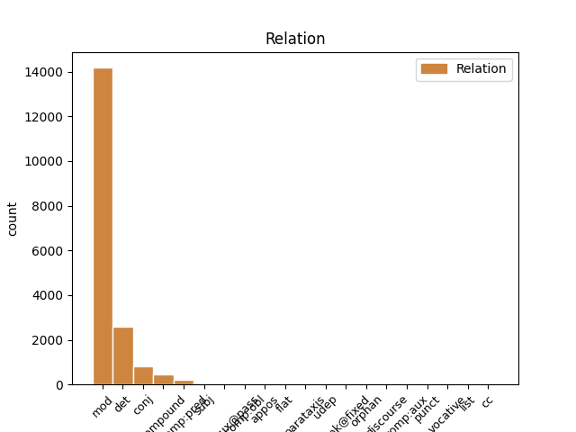
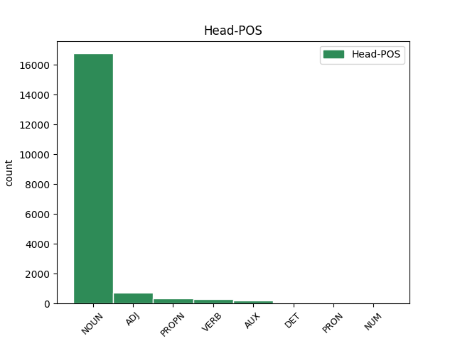
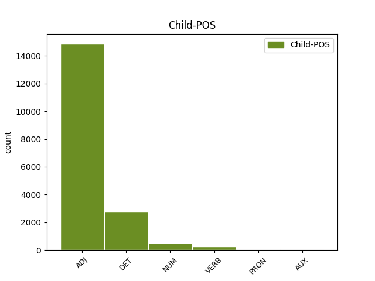

Distribution of features within this leaf



Agreement Rules sorted by frequency.
- When the dependent token is the modifer(mod) of the head token, and the dependent token is ADJ.
1 Nakon _ _ _ _ 0 _ _ _
2 odluke _ _ _ _ 0 _ _ _
3 Europskog europski ADJ Agpmsgy Case=Gen|Definite=Def|Degree=Pos|Gender=Masc|Number=Sing 4 mod _ _
4 suda sud NOUN Ncmsg Case=Gen|Gender=Masc|Number=Sing 0 _ _ _
5 u _ _ _ _ 0 _ _ _
6 Strasbourgu _ _ _ _ 0 _ _ _
1 ( _ _ _ _ 0 _ _ _
2 3 _ _ _ _ 0 _ _ _
3 ) _ _ _ _ 0 _ _ _
4 Za _ _ _ _ 0 _ _ _
5 dio _ _ _ _ 0 _ _ _
6 građevinskog _ _ _ _ 0 _ _ _
7 područja _ _ _ _ 0 _ _ _
8 naselja _ _ _ _ 0 _ _ _
9 Novi _ _ _ _ 0 _ _ _
10 Vinodolski _ _ _ _ 0 _ _ _
11 NA1 _ _ _ _ 0 _ _ _
12 1 _ _ _ _ 0 _ _ _
13 - _ _ _ _ 0 _ _ _
14 registriranu _ _ _ _ 0 _ _ _
15 povijesnu _ _ _ _ 0 _ _ _
16 graditeljsku _ _ _ _ 0 _ _ _
17 cjelinu _ _ _ _ 0 _ _ _
18 , _ _ _ _ 0 _ _ _
19 moguća _ _ _ _ 0 _ _ _
20 su _ _ _ _ 0 _ _ _
21 odstupanja _ _ _ _ 0 _ _ _
22 od _ _ _ _ 0 _ _ _
23 zadanih _ _ _ _ 0 _ _ _
24 graničnih _ _ _ _ 0 _ _ _
25 vrijednosti _ _ _ _ 0 _ _ _
26 navedenih _ _ _ _ 0 _ _ _
27 u _ _ _ _ 0 _ _ _
28 člancima _ _ _ _ 0 _ _ _
29 27. _ _ _ _ 0 _ _ _
30 i _ _ _ _ 0 _ _ _
31 28. _ _ _ _ 0 _ _ _
32 Ovih ovaj DET Pd-fpg Case=Gen|Gender=Fem|Number=Plur|PronType=Dem 33 det _ _
33 Odredbi odredba NOUN Ncfpg Case=Gen|Gender=Fem|Number=Plur 0 _ _ _
34 ali _ _ _ _ 0 _ _ _
35 samo _ _ _ _ 0 _ _ _
36 u _ _ _ _ 0 _ _ _
37 smislu _ _ _ _ 0 _ _ _
38 uvjeta _ _ _ _ 0 _ _ _
39 određenih _ _ _ _ 0 _ _ _
40 od _ _ _ _ 0 _ _ _
41 nadležnog _ _ _ _ 0 _ _ _
42 Konzervatorskog _ _ _ _ 0 _ _ _
43 odjela _ _ _ _ 0 _ _ _
44 ( _ _ _ _ 0 _ _ _
45 označeno _ _ _ _ 0 _ _ _
46 kao _ _ _ _ 0 _ _ _
47 gradsko _ _ _ _ 0 _ _ _
48 naselje _ _ _ _ 0 _ _ _
49 - _ _ _ _ 0 _ _ _
50 zone _ _ _ _ 0 _ _ _
51 14 _ _ _ _ 0 _ _ _
52 A _ _ _ _ 0 _ _ _
53 i _ _ _ _ 0 _ _ _
54 14 _ _ _ _ 0 _ _ _
55 B _ _ _ _ 0 _ _ _
56 na _ _ _ _ 0 _ _ _
57 kartografskom _ _ _ _ 0 _ _ _
58 prikazu _ _ _ _ 0 _ _ _
59 br. _ _ _ _ 0 _ _ _
60 4.1. _ _ _ _ 0 _ _ _
61 » _ _ _ _ 0 _ _ _
62 Građevinska _ _ _ _ 0 _ _ _
63 područja _ _ _ _ 0 _ _ _
64 « _ _ _ _ 0 _ _ _
65 u _ _ _ _ 0 _ _ _
66 mjerilu _ _ _ _ 0 _ _ _
67 1:5000 _ _ _ _ 0 _ _ _
68 ) _ _ _ _ 0 _ _ _
69 . _ _ _ _ 0 _ _ _
1 Slikovito _ _ _ _ 0 _ _ _
2 rečeno _ _ _ _ 0 _ _ _
3 , _ _ _ _ 0 _ _ _
4 uobičajen uobičajen ADJ Agpmsnn Case=Nom|Definite=Ind|Degree=Pos|Gender=Masc|Number=Sing 0 _ _ _
5 , _ _ _ _ 0 _ _ _
6 i _ _ _ _ 0 _ _ _
7 modno _ _ _ _ 0 _ _ _
8 nametnut nametnut ADJ Agpmsnn Case=Nom|Definite=Ind|Degree=Pos|Gender=Masc|Number=Sing 4 conj _ _
9 način _ _ _ _ 0 _ _ _
10 odijevanja _ _ _ _ 0 _ _ _
11 suvremene _ _ _ _ 0 _ _ _
12 žene _ _ _ _ 0 _ _ _
13 karakteriziraju _ _ _ _ 0 _ _ _
14 duboki _ _ _ _ 0 _ _ _
15 izrazi _ _ _ _ 0 _ _ _
16 gdje _ _ _ _ 0 _ _ _
17 god _ _ _ _ 0 _ _ _
18 je _ _ _ _ 0 _ _ _
19 i _ _ _ _ 0 _ _ _
20 koliko _ _ _ _ 0 _ _ _
21 god _ _ _ _ 0 _ _ _
22 je _ _ _ _ 0 _ _ _
23 moguće _ _ _ _ 0 _ _ _
24 . _ _ _ _ 0 _ _ _
1 Kako _ _ _ _ 0 _ _ _
2 u _ _ _ _ 0 _ _ _
3 svom _ _ _ _ 0 _ _ _
4 priopćenju _ _ _ _ 0 _ _ _
5 napominju _ _ _ _ 0 _ _ _
6 iz _ _ _ _ 0 _ _ _
7 Spona _ _ _ _ 0 _ _ _
8 komunikacija _ _ _ _ 0 _ _ _
9 , _ _ _ _ 0 _ _ _
10 u _ _ _ _ 0 _ _ _
11 tekstu _ _ _ _ 0 _ _ _
12 se _ _ _ _ 0 _ _ _
13 navodi _ _ _ _ 0 _ _ _
14 da _ _ _ _ 0 _ _ _
15 su _ _ _ _ 0 _ _ _
16 Irska _ _ _ _ 0 _ _ _
17 i _ _ _ _ 0 _ _ _
18 Poljska _ _ _ _ 0 _ _ _
19 jedne _ _ _ _ 0 _ _ _
20 od _ _ _ _ 0 _ _ _
21 rijetkih _ _ _ _ 0 _ _ _
22 zemalja _ _ _ _ 0 _ _ _
23 u _ _ _ _ 0 _ _ _
24 kojima _ _ _ _ 0 _ _ _
25 je _ _ _ _ 0 _ _ _
26 ova _ _ _ _ 0 _ _ _
27 pilula _ _ _ _ 0 _ _ _
28 posve _ _ _ _ 0 _ _ _
29 zabranjena _ _ _ _ 0 _ _ _
30 , _ _ _ _ 0 _ _ _
31 što _ _ _ _ 0 _ _ _
32 je _ _ _ _ 0 _ _ _
33 netočno _ _ _ _ 0 _ _ _
34 , _ _ _ _ 0 _ _ _
35 jer _ _ _ _ 0 _ _ _
36 je _ _ _ _ 0 _ _ _
37 pilula _ _ _ _ 0 _ _ _
38 indicirana _ _ _ _ 0 _ _ _
39 na _ _ _ _ 0 _ _ _
40 hitnu _ _ _ _ 0 _ _ _
41 kontracepciju _ _ _ _ 0 _ _ _
42 , _ _ _ _ 0 _ _ _
43 koja _ _ _ _ 0 _ _ _
44 sadrži _ _ _ _ 0 _ _ _
45 levonorgestrel _ _ _ _ 0 _ _ _
46 , _ _ _ _ 0 _ _ _
47 dostupna _ _ _ _ 0 _ _ _
48 u _ _ _ _ 0 _ _ _
49 obje oba NUM Mlsf-l Case=Loc|Gender=Fem|NumType=Mult 50 mod _ _
50 države država NOUN Ncfsg Case=Gen|Gender=Fem|Number=Sing 0 _ _ _
51 , _ _ _ _ 0 _ _ _
52 gdje _ _ _ _ 0 _ _ _
53 se _ _ _ _ 0 _ _ _
54 prodaje _ _ _ _ 0 _ _ _
55 u _ _ _ _ 0 _ _ _
56 ljekarnama _ _ _ _ 0 _ _ _
57 na _ _ _ _ 0 _ _ _
58 liječnički _ _ _ _ 0 _ _ _
59 recept _ _ _ _ 0 _ _ _
60 , _ _ _ _ 0 _ _ _
61 kao _ _ _ _ 0 _ _ _
62 što _ _ _ _ 0 _ _ _
63 je _ _ _ _ 0 _ _ _
64 to _ _ _ _ 0 _ _ _
65 od _ _ _ _ 0 _ _ _
66 danas _ _ _ _ 0 _ _ _
67 moguće _ _ _ _ 0 _ _ _
68 i _ _ _ _ 0 _ _ _
69 u _ _ _ _ 0 _ _ _
70 Hrvatskoj _ _ _ _ 0 _ _ _
71 . _ _ _ _ 0 _ _ _
1 ( _ _ _ _ 0 _ _ _
2 3 _ _ _ _ 0 _ _ _
3 ) _ _ _ _ 0 _ _ _
4 Za _ _ _ _ 0 _ _ _
5 dio _ _ _ _ 0 _ _ _
6 građevinskog _ _ _ _ 0 _ _ _
7 područja _ _ _ _ 0 _ _ _
8 naselja _ _ _ _ 0 _ _ _
9 Novi nov ADJ Agpmsny Case=Nom|Definite=Def|Degree=Pos|Gender=Masc|Number=Sing 10 compound _ _
10 Vinodolski Vinodolski PROPN Npmsn Case=Nom|Gender=Masc|Number=Sing 0 _ _ _
11 NA1 _ _ _ _ 0 _ _ _
12 1 _ _ _ _ 0 _ _ _
13 - _ _ _ _ 0 _ _ _
14 registriranu _ _ _ _ 0 _ _ _
15 povijesnu _ _ _ _ 0 _ _ _
16 graditeljsku _ _ _ _ 0 _ _ _
17 cjelinu _ _ _ _ 0 _ _ _
18 , _ _ _ _ 0 _ _ _
19 moguća _ _ _ _ 0 _ _ _
20 su _ _ _ _ 0 _ _ _
21 odstupanja _ _ _ _ 0 _ _ _
22 od _ _ _ _ 0 _ _ _
23 zadanih _ _ _ _ 0 _ _ _
24 graničnih _ _ _ _ 0 _ _ _
25 vrijednosti _ _ _ _ 0 _ _ _
26 navedenih _ _ _ _ 0 _ _ _
27 u _ _ _ _ 0 _ _ _
28 člancima _ _ _ _ 0 _ _ _
29 27. _ _ _ _ 0 _ _ _
30 i _ _ _ _ 0 _ _ _
31 28. _ _ _ _ 0 _ _ _
32 Ovih _ _ _ _ 0 _ _ _
33 Odredbi _ _ _ _ 0 _ _ _
34 ali _ _ _ _ 0 _ _ _
35 samo _ _ _ _ 0 _ _ _
36 u _ _ _ _ 0 _ _ _
37 smislu _ _ _ _ 0 _ _ _
38 uvjeta _ _ _ _ 0 _ _ _
39 određenih _ _ _ _ 0 _ _ _
40 od _ _ _ _ 0 _ _ _
41 nadležnog _ _ _ _ 0 _ _ _
42 Konzervatorskog _ _ _ _ 0 _ _ _
43 odjela _ _ _ _ 0 _ _ _
44 ( _ _ _ _ 0 _ _ _
45 označeno _ _ _ _ 0 _ _ _
46 kao _ _ _ _ 0 _ _ _
47 gradsko _ _ _ _ 0 _ _ _
48 naselje _ _ _ _ 0 _ _ _
49 - _ _ _ _ 0 _ _ _
50 zone _ _ _ _ 0 _ _ _
51 14 _ _ _ _ 0 _ _ _
52 A _ _ _ _ 0 _ _ _
53 i _ _ _ _ 0 _ _ _
54 14 _ _ _ _ 0 _ _ _
55 B _ _ _ _ 0 _ _ _
56 na _ _ _ _ 0 _ _ _
57 kartografskom _ _ _ _ 0 _ _ _
58 prikazu _ _ _ _ 0 _ _ _
59 br. _ _ _ _ 0 _ _ _
60 4.1. _ _ _ _ 0 _ _ _
61 » _ _ _ _ 0 _ _ _
62 Građevinska _ _ _ _ 0 _ _ _
63 područja _ _ _ _ 0 _ _ _
64 « _ _ _ _ 0 _ _ _
65 u _ _ _ _ 0 _ _ _
66 mjerilu _ _ _ _ 0 _ _ _
67 1:5000 _ _ _ _ 0 _ _ _
68 ) _ _ _ _ 0 _ _ _
69 . _ _ _ _ 0 _ _ _
1 Sastav _ _ _ _ 0 _ _ _
2 momčadi _ _ _ _ 0 _ _ _
3 je _ _ _ _ 0 _ _ _
4 bio biti AUX Vap-sm Gender=Masc|Number=Sing|Tense=Past|VerbForm=Part|Voice=Act 0 _ _ _
5 dosta _ _ _ _ 0 _ _ _
6 heterogen heterogen ADJ Agpmsnn Case=Nom|Definite=Ind|Degree=Pos|Gender=Masc|Number=Sing 4 comp:pred _ _
7 što _ _ _ _ 0 _ _ _
8 se _ _ _ _ 0 _ _ _
9 tiče _ _ _ _ 0 _ _ _
10 godina _ _ _ _ 0 _ _ _
11 . _ _ _ _ 0 _ _ _
1 Prošle _ _ _ _ 0 _ _ _
2 sezone _ _ _ _ 0 _ _ _
3 su _ _ _ _ 0 _ _ _
4 ' _ _ _ _ 0 _ _ _
5 Spursi _ _ _ _ 0 _ _ _
6 ' _ _ _ _ 0 _ _ _
7 također _ _ _ _ 0 _ _ _
8 pred _ _ _ _ 0 _ _ _
9 sam _ _ _ _ 0 _ _ _
10 kraj _ _ _ _ 0 _ _ _
11 sezone _ _ _ _ 0 _ _ _
12 prestigli prestići VERB Vmp-pm Gender=Masc|Number=Plur|Tense=Past|VerbForm=Part|Voice=Act 0 _ _ _
13 City _ _ _ _ 0 _ _ _
14 i _ _ _ _ 0 _ _ _
15 uhvatili uhvatiti VERB Vmp-pm Gender=Masc|Number=Plur|Tense=Past|VerbForm=Part|Voice=Act 12 conj _ _
16 mjesto _ _ _ _ 0 _ _ _
17 koje _ _ _ _ 0 _ _ _
18 vodi _ _ _ _ 0 _ _ _
19 u _ _ _ _ 0 _ _ _
20 LP _ _ _ _ 0 _ _ _
21 , _ _ _ _ 0 _ _ _
22 a _ _ _ _ 0 _ _ _
23 kakve _ _ _ _ 0 _ _ _
24 će _ _ _ _ 0 _ _ _
25 sreće _ _ _ _ 0 _ _ _
26 biti _ _ _ _ 0 _ _ _
27 ove _ _ _ _ 0 _ _ _
28 sezone _ _ _ _ 0 _ _ _
29 , _ _ _ _ 0 _ _ _
30 saznat _ _ _ _ 0 _ _ _
31 ćemo _ _ _ _ 0 _ _ _
32 uskoro _ _ _ _ 0 _ _ _
33 . _ _ _ _ 0 _ _ _
1 Premda _ _ _ _ 0 _ _ _
2 je _ _ _ _ 0 _ _ _
3 , _ _ _ _ 0 _ _ _
4 kao _ _ _ _ 0 _ _ _
5 i _ _ _ _ 0 _ _ _
6 svako _ _ _ _ 0 _ _ _
7 dijete _ _ _ _ 0 _ _ _
8 , _ _ _ _ 0 _ _ _
9 voljela _ _ _ _ 0 _ _ _
10 igru _ _ _ _ 0 _ _ _
11 i _ _ _ _ 0 _ _ _
12 priče _ _ _ _ 0 _ _ _
13 , _ _ _ _ 0 _ _ _
14 ovakvi _ _ _ _ 0 _ _ _
15 su _ _ _ _ 0 _ _ _
16 se _ _ _ _ 0 _ _ _
17 trenutci _ _ _ _ 0 _ _ _
18 upisali _ _ _ _ 0 _ _ _
19 duboko _ _ _ _ 0 _ _ _
20 u _ _ _ _ 0 _ _ _
21 dušu _ _ _ _ 0 _ _ _
22 njezinoga njezin DET Ps3nsg Case=Gen|Gender=Neut|Gender[psor]=Fem|Number=Sing|Number[psor]=Sing|Person=3|Poss=Yes|PronType=Prs 23 mod _ _
23 bića biće NOUN Ncnsg Case=Gen|Gender=Neut|Number=Sing 0 _ _ _
24 . _ _ _ _ 0 _ _ _
1 Naš _ _ _ _ 0 _ _ _
2 je _ _ _ _ 0 _ _ _
3 centar _ _ _ _ 0 _ _ _
4 na _ _ _ _ 0 _ _ _
5 ovogodišnjoj _ _ _ _ 0 _ _ _
6 Svjetskoj _ _ _ _ 0 _ _ _
7 konferenciji _ _ _ _ 0 _ _ _
8 za _ _ _ _ 0 _ _ _
9 outlet _ _ _ _ 0 _ _ _
10 centre _ _ _ _ 0 _ _ _
11 u _ _ _ _ 0 _ _ _
12 Londonu _ _ _ _ 0 _ _ _
13 bio biti AUX Vap-sm Gender=Masc|Number=Sing|Tense=Past|VerbForm=Part|Voice=Act 0 _ _ _
14 prikazan prikazati ADJ Appmsnn Case=Nom|Definite=Ind|Degree=Pos|Gender=Masc|Number=Sing|VerbForm=Part|Voice=Pass 13 comp:aux@pass _ _
15 kao _ _ _ _ 0 _ _ _
16 uzorni _ _ _ _ 0 _ _ _
17 projekt _ _ _ _ 0 _ _ _
18 za _ _ _ _ 0 _ _ _
19 takve _ _ _ _ 0 _ _ _
20 centre _ _ _ _ 0 _ _ _
21 , _ _ _ _ 0 _ _ _
22 između _ _ _ _ 0 _ _ _
23 ostalog _ _ _ _ 0 _ _ _
24 i _ _ _ _ 0 _ _ _
25 zato _ _ _ _ 0 _ _ _
26 jer _ _ _ _ 0 _ _ _
27 smo _ _ _ _ 0 _ _ _
28 koristili _ _ _ _ 0 _ _ _
29 hrvatsku _ _ _ _ 0 _ _ _
30 arhitekturu _ _ _ _ 0 _ _ _
31 . _ _ _ _ 0 _ _ _
1 Takvo _ _ _ _ 0 _ _ _
2 neugodno _ _ _ _ 0 _ _ _
3 iznenađenje _ _ _ _ 0 _ _ _
4 je _ _ _ _ 0 _ _ _
5 doživjela _ _ _ _ 0 _ _ _
6 grupa grupa NOUN Ncfsn Case=Nom|Gender=Fem|Number=Sing 0 _ _ _
7 gledatelja _ _ _ _ 0 _ _ _
8 koja _ _ _ _ 0 _ _ _
9 se _ _ _ _ 0 _ _ _
10 unezvijereno _ _ _ _ 0 _ _ _
11 sjatila sjatiti VERB Vmp-sf Gender=Fem|Number=Sing|Tense=Past|VerbForm=Part|Voice=Act 6 mod _ _
12 na _ _ _ _ 0 _ _ _
13 kinoblagajnu _ _ _ _ 0 _ _ _
14 liverpoolskog _ _ _ _ 0 _ _ _
15 Odeon _ _ _ _ 0 _ _ _
16 cineplexa _ _ _ _ 0 _ _ _
17 tražeći _ _ _ _ 0 _ _ _
18 povrat _ _ _ _ 0 _ _ _
19 novaca _ _ _ _ 0 _ _ _
20 od _ _ _ _ 0 _ _ _
21 izbezumljenih _ _ _ _ 0 _ _ _
22 prodavača _ _ _ _ 0 _ _ _
23 zbog _ _ _ _ 0 _ _ _
24 toga _ _ _ _ 0 _ _ _
25 što _ _ _ _ 0 _ _ _
26 u _ _ _ _ 0 _ _ _
27 cijelom _ _ _ _ 0 _ _ _
28 filmu _ _ _ _ 0 _ _ _
29 Umjetnik _ _ _ _ 0 _ _ _
30 glumci _ _ _ _ 0 _ _ _
31 nisu _ _ _ _ 0 _ _ _
32 prozborili _ _ _ _ 0 _ _ _
33 niti _ _ _ _ 0 _ _ _
34 jednu _ _ _ _ 0 _ _ _
35 jedninu _ _ _ _ 0 _ _ _
36 riječ _ _ _ _ 0 _ _ _
37 . _ _ _ _ 0 _ _ _
1 Lokomotiva _ _ _ _ 0 _ _ _
2 je _ _ _ _ 0 _ _ _
3 velikim _ _ _ _ 0 _ _ _
4 preokretom _ _ _ _ 0 _ _ _
5 u _ _ _ _ 0 _ _ _
6 drugom _ _ _ _ 0 _ _ _
7 poluvremenu _ _ _ _ 0 _ _ _
8 utakmice _ _ _ _ 0 _ _ _
9 za _ _ _ _ 0 _ _ _
10 treće _ _ _ _ 0 _ _ _
11 mjesto _ _ _ _ 0 _ _ _
12 Regionalne _ _ _ _ 0 _ _ _
13 lige _ _ _ _ 0 _ _ _
14 uspjela _ _ _ _ 0 _ _ _
15 nadoknaditi _ _ _ _ 0 _ _ _
16 minus _ _ _ _ 0 _ _ _
17 od _ _ _ _ 0 _ _ _
18 šest _ _ _ _ 0 _ _ _
19 golova _ _ _ _ 0 _ _ _
20 i _ _ _ _ 0 _ _ _
21 dobiti _ _ _ _ 0 _ _ _
22 već _ _ _ _ 0 _ _ _
23 izgubljenu _ _ _ _ 0 _ _ _
24 utakmicu _ _ _ _ 0 _ _ _
25 , _ _ _ _ 0 _ _ _
26 ponajprije _ _ _ _ 0 _ _ _
27 zahvaljujući _ _ _ _ 0 _ _ _
28 nevjerojatnoj _ _ _ _ 0 _ _ _
29 Ivani _ _ _ _ 0 _ _ _
30 Božović _ _ _ _ 0 _ _ _
31 koja koji DET Pi-fsn Case=Nom|Gender=Fem|Number=Sing|PronType=Int,Rel 35 subj _ _
32 s _ _ _ _ 0 _ _ _
33 14 _ _ _ _ 0 _ _ _
34 golova _ _ _ _ 0 _ _ _
35 bila biti AUX Vap-sf Gender=Fem|Number=Sing|Tense=Past|VerbForm=Part|Voice=Act 0 _ _ _
36 prvo _ _ _ _ 0 _ _ _
37 ime _ _ _ _ 0 _ _ _
38 velikog _ _ _ _ 0 _ _ _
39 povratka _ _ _ _ 0 _ _ _
40 Lokomotive _ _ _ _ 0 _ _ _
41 i _ _ _ _ 0 _ _ _
42 neočekivanog _ _ _ _ 0 _ _ _
43 poraza _ _ _ _ 0 _ _ _
44 Podravke _ _ _ _ 0 _ _ _
45 Vegete _ _ _ _ 0 _ _ _
46 . _ _ _ _ 0 _ _ _
1 Dok _ _ _ _ 0 _ _ _
2 je _ _ _ _ 0 _ _ _
3 prethodno _ _ _ _ 0 _ _ _
4 bilo _ _ _ _ 0 _ _ _
5 govora _ _ _ _ 0 _ _ _
6 kako _ _ _ _ 0 _ _ _
7 će _ _ _ _ 0 _ _ _
8 Marija _ _ _ _ 0 _ _ _
9 roditi _ _ _ _ 0 _ _ _
10 Sina _ _ _ _ 0 _ _ _
11 ( _ _ _ _ 0 _ _ _
12 r. _ _ _ _ 0 _ _ _
13 31 _ _ _ _ 0 _ _ _
14 ) _ _ _ _ 0 _ _ _
15 , _ _ _ _ 0 _ _ _
16 koji _ _ _ _ 0 _ _ _
17 će _ _ _ _ 0 _ _ _
18 biti _ _ _ _ 0 _ _ _
19 velik _ _ _ _ 0 _ _ _
20 i _ _ _ _ 0 _ _ _
21 zvati _ _ _ _ 0 _ _ _
22 se _ _ _ _ 0 _ _ _
23 Sin _ _ _ _ 0 _ _ _
24 Previšnjega _ _ _ _ 0 _ _ _
25 ( _ _ _ _ 0 _ _ _
26 r. _ _ _ _ 0 _ _ _
27 32 _ _ _ _ 0 _ _ _
28 ) _ _ _ _ 0 _ _ _
29 , _ _ _ _ 0 _ _ _
30 ovdje _ _ _ _ 0 _ _ _
31 je _ _ _ _ 0 _ _ _
32 Isus _ _ _ _ 0 _ _ _
33 prvi _ _ _ _ 0 _ _ _
34 put _ _ _ _ 0 _ _ _
35 nazvan _ _ _ _ 0 _ _ _
36 Sinom _ _ _ _ 0 _ _ _
37 Božjim _ _ _ _ 0 _ _ _
38 , _ _ _ _ 0 _ _ _
39 jer _ _ _ _ 0 _ _ _
40 njegovo _ _ _ _ 0 _ _ _
41 začeće _ _ _ _ 0 _ _ _
42 je _ _ _ _ 0 _ _ _
43 djelo _ _ _ _ 0 _ _ _
44 Duha Duh NOUN Ncmsg Case=Gen|Gender=Masc|Number=Sing 0 _ _ _
45 Svetoga Sveti ADJ Agpmsgy Case=Gen|Definite=Def|Degree=Pos|Gender=Masc|Number=Sing 44 flat _ SpaceAfter=No
46 . _ _ _ _ 0 _ _ _
1 Odstupanje _ _ _ _ 0 _ _ _
2 od _ _ _ _ 0 _ _ _
3 gradiva _ _ _ _ 0 _ _ _
4 ispitnog _ _ _ _ 0 _ _ _
5 kataloga katalog NOUN Ncmsg Case=Gen|Gender=Masc|Number=Sing 0 _ _ _
6 i _ _ _ _ 0 _ _ _
7 onoga onaj DET Pd-msg Case=Gen|Gender=Masc|Number=Sing|PronType=Dem 5 conj _ _
8 koje _ _ _ _ 0 _ _ _
9 uopće _ _ _ _ 0 _ _ _
10 u _ _ _ _ 0 _ _ _
11 njemu _ _ _ _ 0 _ _ _
12 nije _ _ _ _ 0 _ _ _
13 navedeno _ _ _ _ 0 _ _ _
14 , _ _ _ _ 0 _ _ _
15 smatra _ _ _ _ 0 _ _ _
16 se _ _ _ _ 0 _ _ _
17 prekršajnim _ _ _ _ 0 _ _ _
18 i _ _ _ _ 0 _ _ _
19 kaznenim _ _ _ _ 0 _ _ _
20 djelom _ _ _ _ 0 _ _ _
21 . _ _ _ _ 0 _ _ _
1 Radi _ _ _ _ 0 _ _ _
2 se _ _ _ _ 0 _ _ _
3 o _ _ _ _ 0 _ _ _
4 boksaču _ _ _ _ 0 _ _ _
5 koji _ _ _ _ 0 _ _ _
6 je _ _ _ _ 0 _ _ _
7 najveći _ _ _ _ 0 _ _ _
8 dio _ _ _ _ 0 _ _ _
9 profesionalne _ _ _ _ 0 _ _ _
10 karijere _ _ _ _ 0 _ _ _
11 proveo _ _ _ _ 0 _ _ _
12 u _ _ _ _ 0 _ _ _
13 poluteškoj _ _ _ _ 0 _ _ _
14 kategoriji _ _ _ _ 0 _ _ _
15 u _ _ _ _ 0 _ _ _
16 kojoj _ _ _ _ 0 _ _ _
17 je _ _ _ _ 0 _ _ _
18 bio _ _ _ _ 0 _ _ _
19 i _ _ _ _ 0 _ _ _
20 svjetski _ _ _ _ 0 _ _ _
21 prvak _ _ _ _ 0 _ _ _
22 , _ _ _ _ 0 _ _ _
23 a _ _ _ _ 0 _ _ _
24 naslove _ _ _ _ 0 _ _ _
25 mu on PRON Pp3msd Case=Dat|Gender=Masc|Number=Sing|Person=3|PronType=Prs 28 comp:obl _ _
26 je _ _ _ _ 0 _ _ _
27 2007. _ _ _ _ 0 _ _ _
28 preoteo preoteti VERB Vmp-sm Gender=Masc|Number=Sing|Tense=Past|VerbForm=Part|Voice=Act 0 _ _ _
29 David _ _ _ _ 0 _ _ _
30 Haye _ _ _ _ 0 _ _ _
31 , _ _ _ _ 0 _ _ _
32 inače _ _ _ _ 0 _ _ _
33 posljednja _ _ _ _ 0 _ _ _
34 žrtva _ _ _ _ 0 _ _ _
35 Vladimira _ _ _ _ 0 _ _ _
36 Klička _ _ _ _ 0 _ _ _
37 . _ _ _ _ 0 _ _ _
1 Kod _ _ _ _ 0 _ _ _
2 nas _ _ _ _ 0 _ _ _
3 je _ _ _ _ 0 _ _ _
4 provedena _ _ _ _ 0 _ _ _
5 jedna _ _ _ _ 0 _ _ _
6 necivilizirana _ _ _ _ 0 _ _ _
7 i _ _ _ _ 0 _ _ _
8 kontraproduktivna _ _ _ _ 0 _ _ _
9 stvar stvar NOUN Ncfsn Case=Nom|Gender=Fem|Number=Sing 0 _ _ _
10 ( _ _ _ _ 0 _ _ _
11 zvana zvan ADJ Agpfsny Case=Nom|Definite=Def|Degree=Pos|Gender=Fem|Number=Sing 9 parataxis _ _
12 pretvorba _ _ _ _ 0 _ _ _
13 i _ _ _ _ 0 _ _ _
14 privatizacija _ _ _ _ 0 _ _ _
15 ) _ _ _ _ 0 _ _ _
16 i _ _ _ _ 0 _ _ _
17 to _ _ _ _ 0 _ _ _
18 jest _ _ _ _ 0 _ _ _
19 problem _ _ _ _ 0 _ _ _
20 koji _ _ _ _ 0 _ _ _
21 kod _ _ _ _ 0 _ _ _
22 nas _ _ _ _ 0 _ _ _
23 stalno _ _ _ _ 0 _ _ _
24 visi _ _ _ _ 0 _ _ _
25 i _ _ _ _ 0 _ _ _
26 traži _ _ _ _ 0 _ _ _
27 adekvatni _ _ _ _ 0 _ _ _
28 odgovor _ _ _ _ 0 _ _ _
29 . _ _ _ _ 0 _ _ _
1 Podsjetimo _ _ _ _ 0 _ _ _
2 , _ _ _ _ 0 _ _ _
3 prošle _ _ _ _ 0 _ _ _
4 godine _ _ _ _ 0 _ _ _
5 nakon _ _ _ _ 0 _ _ _
6 prvog _ _ _ _ 0 _ _ _
7 upisnog _ _ _ _ 0 _ _ _
8 kruga _ _ _ _ 0 _ _ _
9 mjesta _ _ _ _ 0 _ _ _
10 je _ _ _ _ 0 _ _ _
11 osim _ _ _ _ 0 _ _ _
12 za _ _ _ _ 0 _ _ _
13 studij _ _ _ _ 0 _ _ _
14 klasičnih _ _ _ _ 0 _ _ _
15 jezika jezik NOUN Ncmpg Case=Gen|Gender=Masc|Number=Plur 0 _ _ _
16 , _ _ _ _ 0 _ _ _
17 grčkog grčki ADJ Agpmsgy Case=Gen|Definite=Def|Degree=Pos|Gender=Masc|Number=Sing 15 appos _ _
18 i _ _ _ _ 0 _ _ _
19 latinskog _ _ _ _ 0 _ _ _
20 za _ _ _ _ 0 _ _ _
21 što _ _ _ _ 0 _ _ _
22 se _ _ _ _ 0 _ _ _
23 prijavilo _ _ _ _ 0 _ _ _
24 tek _ _ _ _ 0 _ _ _
25 osam _ _ _ _ 0 _ _ _
26 kandidata _ _ _ _ 0 _ _ _
27 , _ _ _ _ 0 _ _ _
28 ostalo _ _ _ _ 0 _ _ _
29 na _ _ _ _ 0 _ _ _
30 odjelima _ _ _ _ 0 _ _ _
31 za _ _ _ _ 0 _ _ _
32 njemački _ _ _ _ 0 _ _ _
33 jezik _ _ _ _ 0 _ _ _
34 , _ _ _ _ 0 _ _ _
35 arheologije _ _ _ _ 0 _ _ _
36 i _ _ _ _ 0 _ _ _
37 knjižničarstva _ _ _ _ 0 _ _ _
38 . _ _ _ _ 0 _ _ _
1 Ona on PRON Pp3fsn Case=Nom|Gender=Fem|Number=Sing|Person=3|PronType=Prs 3 subj _ _
2 se _ _ _ _ 0 _ _ _
3 srušila srušiti VERB Vmp-sf Gender=Fem|Number=Sing|Tense=Past|VerbForm=Part|Voice=Act 0 _ _ _
4 i _ _ _ _ 0 _ _ _
5 završila _ _ _ _ 0 _ _ _
6 je _ _ _ _ 0 _ _ _
7 u _ _ _ _ 0 _ _ _
8 bolnici _ _ _ _ 0 _ _ _
9 . _ _ _ _ 0 _ _ _
1 BELI _ _ _ _ 0 _ _ _
2 MANASTIR _ _ _ _ 0 _ _ _
3 - _ _ _ _ 0 _ _ _
4 Unatoč _ _ _ _ 0 _ _ _
5 tome taj DET Pd-nsd Case=Dat|Gender=Neut|Number=Sing|PronType=Dem 0 _ _ _
6 što što PRON Pi3n-n Case=Nom|Gender=Neut|PronType=Int,Rel 5 unk@fixed _ _
7 APN-u _ _ _ _ 0 _ _ _
8 ljudi _ _ _ _ 0 _ _ _
9 nude _ _ _ _ 0 _ _ _
10 kuće _ _ _ _ 0 _ _ _
11 na _ _ _ _ 0 _ _ _
12 prodaju _ _ _ _ 0 _ _ _
13 , _ _ _ _ 0 _ _ _
14 a _ _ _ _ 0 _ _ _
15 drugi _ _ _ _ 0 _ _ _
16 bi _ _ _ _ 0 _ _ _
17 se _ _ _ _ 0 _ _ _
18 rado _ _ _ _ 0 _ _ _
19 skrasili _ _ _ _ 0 _ _ _
20 u _ _ _ _ 0 _ _ _
21 tim _ _ _ _ 0 _ _ _
22 objektima _ _ _ _ 0 _ _ _
23 preko _ _ _ _ 0 _ _ _
24 APN-a _ _ _ _ 0 _ _ _
25 , _ _ _ _ 0 _ _ _
26 ta _ _ _ _ 0 _ _ _
27 institucija _ _ _ _ 0 _ _ _
28 ne _ _ _ _ 0 _ _ _
29 samo _ _ _ _ 0 _ _ _
30 da _ _ _ _ 0 _ _ _
31 ne _ _ _ _ 0 _ _ _
32 provodi _ _ _ _ 0 _ _ _
33 taj _ _ _ _ 0 _ _ _
34 program _ _ _ _ 0 _ _ _
35 , _ _ _ _ 0 _ _ _
36 nego _ _ _ _ 0 _ _ _
37 je _ _ _ _ 0 _ _ _
38 on _ _ _ _ 0 _ _ _
39 potpuno _ _ _ _ 0 _ _ _
40 stao _ _ _ _ 0 _ _ _
41 . _ _ _ _ 0 _ _ _
1 Bio biti AUX Vap-sm Gender=Masc|Number=Sing|Tense=Past|VerbForm=Part|Voice=Act 0 _ _ _
2 je _ _ _ _ 0 _ _ _
3 to _ _ _ _ 0 _ _ _
4 jedan jedan NUM Mlcmsn Case=Nom|Gender=Masc|Number=Sing|NumType=Card 1 comp:pred _ _
5 od _ _ _ _ 0 _ _ _
6 toplijih _ _ _ _ 0 _ _ _
7 srpanjskih _ _ _ _ 0 _ _ _
8 dana _ _ _ _ 0 _ _ _
9 , _ _ _ _ 0 _ _ _
10 po _ _ _ _ 0 _ _ _
11 prašnjavoj _ _ _ _ 0 _ _ _
12 pristupnoj _ _ _ _ 0 _ _ _
13 cesti _ _ _ _ 0 _ _ _
14 tutnjali _ _ _ _ 0 _ _ _
15 su _ _ _ _ 0 _ _ _
16 kamioni _ _ _ _ 0 _ _ _
17 za _ _ _ _ 0 _ _ _
18 kojima _ _ _ _ 0 _ _ _
19 su _ _ _ _ 0 _ _ _
20 se _ _ _ _ 0 _ _ _
21 dizali _ _ _ _ 0 _ _ _
22 oblaci _ _ _ _ 0 _ _ _
23 prašine _ _ _ _ 0 _ _ _
24 . _ _ _ _ 0 _ _ _
1 Zaista _ _ _ _ 0 _ _ _
2 ugodno _ _ _ _ 0 _ _ _
3 iskustvo _ _ _ _ 0 _ _ _
4 , _ _ _ _ 0 _ _ _
5 svima sav ADJ Agpmpdy Case=Dat|Definite=Def|Degree=Pos|Gender=Masc|Number=Plur 8 comp:obl _ _
6 bih _ _ _ _ 0 _ _ _
7 to _ _ _ _ 0 _ _ _
8 preporučio preporučiti VERB Vmp-sm Gender=Masc|Number=Sing|Tense=Past|VerbForm=Part|Voice=Act 0 _ _ _
9 . _ _ _ _ 0 _ _ _
1 Doslovno _ _ _ _ 0 _ _ _
2 se _ _ _ _ 0 _ _ _
3 prije _ _ _ _ 0 _ _ _
4 utakmice _ _ _ _ 0 _ _ _
5 svinje _ _ _ _ 0 _ _ _
6 tjeralo _ _ _ _ 0 _ _ _
7 s _ _ _ _ 0 _ _ _
8 terena _ _ _ _ 0 _ _ _
9 , _ _ _ _ 0 _ _ _
10 igrači _ _ _ _ 0 _ _ _
11 psuju _ _ _ _ 0 _ _ _
12 majku _ _ _ _ 0 _ _ _
13 sucu _ _ _ _ 0 _ _ _
14 , _ _ _ _ 0 _ _ _
15 treneru _ _ _ _ 0 _ _ _
16 i _ _ _ _ 0 _ _ _
17 jedni jedan NUM Mlcmpn Case=Nom|Gender=Masc|Number=Plur|NumType=Card 18 compound _ _
18 drugima drugi ADJ Mlompd Case=Dat|Degree=Pos|Gender=Masc|Number=Plur 0 _ _ _
19 . _ _ _ _ 0 _ _ _
1 Konzerve _ _ _ _ 0 _ _ _
2 od _ _ _ _ 0 _ _ _
3 usitnjenog _ _ _ _ 0 _ _ _
4 mesa _ _ _ _ 0 _ _ _
5 moraju _ _ _ _ 0 _ _ _
6 ispunjavati _ _ _ _ 0 _ _ _
7 sljedeće _ _ _ _ 0 _ _ _
8 uvjete _ _ _ _ 0 _ _ _
9 : _ _ _ _ 0 _ _ _
10 sadržaj _ _ _ _ 0 _ _ _
11 konzerve _ _ _ _ 0 _ _ _
12 mora _ _ _ _ 0 _ _ _
13 biti _ _ _ _ 0 _ _ _
14 homogen _ _ _ _ 0 _ _ _
15 i _ _ _ _ 0 _ _ _
16 kompaktan _ _ _ _ 0 _ _ _
17 tako _ _ _ _ 0 _ _ _
18 da _ _ _ _ 0 _ _ _
19 se _ _ _ _ 0 _ _ _
20 može _ _ _ _ 0 _ _ _
21 narezivati _ _ _ _ 0 _ _ _
22 , _ _ _ _ 0 _ _ _
23 odnosno _ _ _ _ 0 _ _ _
24 ne _ _ _ _ 0 _ _ _
25 smije _ _ _ _ 0 _ _ _
26 biti _ _ _ _ 0 _ _ _
27 maziv _ _ _ _ 0 _ _ _
28 ; _ _ _ _ 0 _ _ _
29 sadržaj _ _ _ _ 0 _ _ _
30 konzerve _ _ _ _ 0 _ _ _
31 na _ _ _ _ 0 _ _ _
32 presjeku _ _ _ _ 0 _ _ _
33 može _ _ _ _ 0 _ _ _
34 imati _ _ _ _ 0 _ _ _
35 vidljive _ _ _ _ 0 _ _ _
36 komadiće _ _ _ _ 0 _ _ _
37 usitnjenog _ _ _ _ 0 _ _ _
38 mesa _ _ _ _ 0 _ _ _
39 i _ _ _ _ 0 _ _ _
40 masnog _ _ _ _ 0 _ _ _
41 tkiva _ _ _ _ 0 _ _ _
42 ; _ _ _ _ 0 _ _ _
43 miris _ _ _ _ 0 _ _ _
44 i _ _ _ _ 0 _ _ _
45 okus _ _ _ _ 0 _ _ _
46 treba _ _ _ _ 0 _ _ _
47 biti _ _ _ _ 0 _ _ _
48 svojstven _ _ _ _ 0 _ _ _
49 proizvodu _ _ _ _ 0 _ _ _
50 , _ _ _ _ 0 _ _ _
51 a _ _ _ _ 0 _ _ _
52 boja boja NOUN Ncfsn Case=Nom|Gender=Fem|Number=Sing 0 _ _ _
53 postojana postojan ADJ Agpfsny Case=Nom|Definite=Def|Degree=Pos|Gender=Fem|Number=Sing 52 orphan _ orig_deprel=xcomp|SpaceAfter=No
54 ; _ _ _ _ 0 _ _ _
55 gotov _ _ _ _ 0 _ _ _
56 proizvod _ _ _ _ 0 _ _ _
57 može _ _ _ _ 0 _ _ _
58 imati _ _ _ _ 0 _ _ _
59 do _ _ _ _ 0 _ _ _
60 10 _ _ _ _ 0 _ _ _
61 % _ _ _ _ 0 _ _ _
62 izlučene _ _ _ _ 0 _ _ _
63 masnoće _ _ _ _ 0 _ _ _
64 i _ _ _ _ 0 _ _ _
65 želea _ _ _ _ 0 _ _ _
66 . _ _ _ _ 0 _ _ _
1 Pa _ _ _ _ 0 _ _ _
2 je _ _ _ _ 0 _ _ _
3 majka _ _ _ _ 0 _ _ _
4 opet _ _ _ _ 0 _ _ _
5 malo _ _ _ _ 0 _ _ _
6 radila _ _ _ _ 0 _ _ _
7 pa _ _ _ _ 0 _ _ _
8 ne _ _ _ _ 0 _ _ _
9 radila _ _ _ _ 0 _ _ _
10 , _ _ _ _ 0 _ _ _
11 pa _ _ _ _ 0 _ _ _
12 je _ _ _ _ 0 _ _ _
13 slušala _ _ _ _ 0 _ _ _
14 o _ _ _ _ 0 _ _ _
15 obećanom _ _ _ _ 0 _ _ _
16 ženskom _ _ _ _ 0 _ _ _
17 poduzetništvu _ _ _ _ 0 _ _ _
18 i _ _ _ _ 0 _ _ _
19 kako _ _ _ _ 0 _ _ _
20 je _ _ _ _ 0 _ _ _
21 to taj DET Pd-nsn Case=Nom|Gender=Neut|Number=Sing|PronType=Dem 22 udep _ _
22 super super ADJ Agpnsny Case=Nom|Definite=Def|Degree=Pos|Gender=Neut|Number=Sing 0 _ _ _
23 za _ _ _ _ 0 _ _ _
24 mlade _ _ _ _ 0 _ _ _
25 žene _ _ _ _ 0 _ _ _
26 , _ _ _ _ 0 _ _ _
27 teče _ _ _ _ 0 _ _ _
28 med _ _ _ _ 0 _ _ _
29 i _ _ _ _ 0 _ _ _
30 mlijeko _ _ _ _ 0 _ _ _
31 no _ _ _ _ 0 _ _ _
32 slavno _ _ _ _ 0 _ _ _
33 smo _ _ _ _ 0 _ _ _
34 propali _ _ _ _ 0 _ _ _
35 nakon _ _ _ _ 0 _ _ _
36 8 _ _ _ _ 0 _ _ _
37 mjeseci _ _ _ _ 0 _ _ _
38 . _ _ _ _ 0 _ _ _
1 A _ _ _ _ 0 _ _ _
2 onaj onaj DET Pd-msn Case=Nom|Gender=Masc|Number=Sing|PronType=Dem 0 _ _ _
3 koji _ _ _ _ 0 _ _ _
4 ne _ _ _ _ 0 _ _ _
5 vjeruje _ _ _ _ 0 _ _ _
6 Boga _ _ _ _ 0 _ _ _
7 , _ _ _ _ 0 _ _ _
8 Njegove _ _ _ _ 0 _ _ _
9 meleke _ _ _ _ 0 _ _ _
10 , _ _ _ _ 0 _ _ _
11 Njegove _ _ _ _ 0 _ _ _
12 Knjige _ _ _ _ 0 _ _ _
13 , _ _ _ _ 0 _ _ _
14 Njegove _ _ _ _ 0 _ _ _
15 poslanike _ _ _ _ 0 _ _ _
16 i _ _ _ _ 0 _ _ _
17 Sudnji _ _ _ _ 0 _ _ _
18 dan _ _ _ _ 0 _ _ _
19 , _ _ _ _ 0 _ _ _
20 taj taj DET Pd-msn Case=Nom|Gender=Masc|Number=Sing|PronType=Dem 2 appos _ _
21 je _ _ _ _ 0 _ _ _
22 daleko _ _ _ _ 0 _ _ _
23 zalutao _ _ _ _ 0 _ _ _
24 . _ _ _ _ 0 _ _ _
25 ( _ _ _ _ 0 _ _ _
26 Kur'an _ _ _ _ 0 _ _ _
27 IV. _ _ _ _ 0 _ _ _
28 136 _ _ _ _ 0 _ _ _
29 ) _ _ _ _ 0 _ _ _
1 Roditelji _ _ _ _ 0 _ _ _
2 koji _ _ _ _ 0 _ _ _
3 su _ _ _ _ 0 _ _ _
4 kod _ _ _ _ 0 _ _ _
5 djeteta _ _ _ _ 0 _ _ _
6 i _ _ _ _ 0 _ _ _
7 sami sam ADJ Agpmpny Case=Nom|Definite=Def|Degree=Pos|Gender=Masc|Number=Plur 8 udep _ _
8 primijetili primijetiti VERB Vmp-pm Gender=Masc|Number=Plur|Tense=Past|VerbForm=Part|Voice=Act 0 _ _ _
9 sklonost _ _ _ _ 0 _ _ _
10 agresivnijem _ _ _ _ 0 _ _ _
11 rješavanju _ _ _ _ 0 _ _ _
12 svađa _ _ _ _ 0 _ _ _
13 , _ _ _ _ 0 _ _ _
14 poteškoće _ _ _ _ 0 _ _ _
15 s _ _ _ _ 0 _ _ _
16 kontroliranjem _ _ _ _ 0 _ _ _
17 ljutnje _ _ _ _ 0 _ _ _
18 i _ _ _ _ 0 _ _ _
19 prihvaćanjem _ _ _ _ 0 _ _ _
20 postavljenih _ _ _ _ 0 _ _ _
21 granica _ _ _ _ 0 _ _ _
22 , _ _ _ _ 0 _ _ _
23 trebaju _ _ _ _ 0 _ _ _
24 biti _ _ _ _ 0 _ _ _
25 manje _ _ _ _ 0 _ _ _
26 iznenađeni _ _ _ _ 0 _ _ _
27 takvim _ _ _ _ 0 _ _ _
28 vijestima _ _ _ _ 0 _ _ _
29 . _ _ _ _ 0 _ _ _
1 Biljno _ _ _ _ 0 _ _ _
2 ulje ulje NOUN Ncnsn Case=Nom|Gender=Neut|Number=Sing 0 _ _ _
3 ... _ _ _ _ 0 _ _ _
4 ono on PRON Pp3nsn Case=Nom|Gender=Neut|Number=Sing|Person=3|PronType=Prs 2 det _ _
5 koje _ _ _ _ 0 _ _ _
6 možeš _ _ _ _ 0 _ _ _
7 kupiti _ _ _ _ 0 _ _ _
8 u _ _ _ _ 0 _ _ _
9 svakom _ _ _ _ 0 _ _ _
10 dućanu _ _ _ _ 0 _ _ _
11 i _ _ _ _ 0 _ _ _
12 na _ _ _ _ 0 _ _ _
13 kojem _ _ _ _ 0 _ _ _
14 piše _ _ _ _ 0 _ _ _
15 ( _ _ _ _ 0 _ _ _
16 nećeš _ _ _ _ 0 _ _ _
17 vjerovati _ _ _ _ 0 _ _ _
18 ) _ _ _ _ 0 _ _ _
19 biljno _ _ _ _ 0 _ _ _
20 ulje _ _ _ _ 0 _ _ _
21 . _ _ _ _ 0 _ _ _
1 Kosovski _ _ _ _ 0 _ _ _
2 premijer _ _ _ _ 0 _ _ _
3 Agim _ _ _ _ 0 _ _ _
4 Čeku _ _ _ _ 0 _ _ _
5 iznio _ _ _ _ 0 _ _ _
6 je _ _ _ _ 0 _ _ _
7 u _ _ _ _ 0 _ _ _
8 srijedu _ _ _ _ 0 _ _ _
9 ( _ _ _ _ 0 _ _ _
10 8. _ _ _ _ 0 _ _ _
11 kolovoz _ _ _ _ 0 _ _ _
12 ) _ _ _ _ 0 _ _ _
13 oštro _ _ _ _ 0 _ _ _
14 upozorenje _ _ _ _ 0 _ _ _
15 glede _ _ _ _ 0 _ _ _
16 mogućeg _ _ _ _ 0 _ _ _
17 povlačenja _ _ _ _ 0 _ _ _
18 Prištine _ _ _ _ 0 _ _ _
19 iz _ _ _ _ 0 _ _ _
20 predstojećih _ _ _ _ 0 _ _ _
21 razgovora _ _ _ _ 0 _ _ _
22 s _ _ _ _ 0 _ _ _
23 Beogradom _ _ _ _ 0 _ _ _
24 u _ _ _ _ 0 _ _ _
25 slučaju _ _ _ _ 0 _ _ _
26 da _ _ _ _ 0 _ _ _
27 se _ _ _ _ 0 _ _ _
28 od _ _ _ _ 0 _ _ _
29 nje _ _ _ _ 0 _ _ _
30 zatraži _ _ _ _ 0 _ _ _
31 prihvaćanje prihvaćanje NOUN Ncnsn Case=Nom|Gender=Neut|Number=Sing 0 _ _ _
32 bilo _ _ _ _ 0 _ _ _
33 čega što PRON Pi3n-g Case=Gen|Gender=Neut|PronType=Int,Rel 31 mod _ _
34 manjeg _ _ _ _ 0 _ _ _
35 od _ _ _ _ 0 _ _ _
36 neovisnosti _ _ _ _ 0 _ _ _
37 ili _ _ _ _ 0 _ _ _
38 pristanak _ _ _ _ 0 _ _ _
39 na _ _ _ _ 0 _ _ _
40 podjelu _ _ _ _ 0 _ _ _
41 pokrajine _ _ _ _ 0 _ _ _
42 po _ _ _ _ 0 _ _ _
43 etničkoj _ _ _ _ 0 _ _ _
44 crti _ _ _ _ 0 _ _ _
45 . _ _ _ _ 0 _ _ _
1 Ali _ _ _ _ 0 _ _ _
2 biće _ _ _ _ 0 _ _ _
3 mora _ _ _ _ 0 _ _ _
4 biti _ _ _ _ 0 _ _ _
5 subjektivno _ _ _ _ 0 _ _ _
6 da _ _ _ _ 0 _ _ _
7 bi _ _ _ _ 0 _ _ _
8 takvo takav DET Pd-nsn Case=Nom|Gender=Neut|Number=Sing|PronType=Dem 9 comp:pred _ _
9 bilo biti AUX Vap-sn Gender=Neut|Number=Sing|Tense=Past|VerbForm=Part|Voice=Act 0 _ _ _
10 . _ _ _ _ 0 _ _ _
1 Životopis _ _ _ _ 0 _ _ _
2 mu _ _ _ _ 0 _ _ _
3 je _ _ _ _ 0 _ _ _
4 objavljen _ _ _ _ 0 _ _ _
5 u _ _ _ _ 0 _ _ _
6 Tko tko PRON Pq3m-n Case=Nom|Gender=Masc|PronType=Int,Rel 8 compound _ _
7 je _ _ _ _ 0 _ _ _
8 tko tko PRON Pq3m-n Case=Nom|Gender=Masc|PronType=Int,Rel 0 _ _ _
9 u _ _ _ _ 0 _ _ _
10 NDH _ _ _ _ 0 _ _ _
11 , _ _ _ _ 0 _ _ _
12 str. _ _ _ _ 0 _ _ _
13 . _ _ _ _ 0 _ _ _
14 314. _ _ _ _ 0 _ _ _
1 Lokomotiva _ _ _ _ 0 _ _ _
2 je _ _ _ _ 0 _ _ _
3 velikim _ _ _ _ 0 _ _ _
4 preokretom _ _ _ _ 0 _ _ _
5 u _ _ _ _ 0 _ _ _
6 drugom _ _ _ _ 0 _ _ _
7 poluvremenu _ _ _ _ 0 _ _ _
8 utakmice _ _ _ _ 0 _ _ _
9 za _ _ _ _ 0 _ _ _
10 treće _ _ _ _ 0 _ _ _
11 mjesto _ _ _ _ 0 _ _ _
12 Regionalne _ _ _ _ 0 _ _ _
13 lige _ _ _ _ 0 _ _ _
14 uspjela _ _ _ _ 0 _ _ _
15 nadoknaditi _ _ _ _ 0 _ _ _
16 minus _ _ _ _ 0 _ _ _
17 od _ _ _ _ 0 _ _ _
18 šest _ _ _ _ 0 _ _ _
19 golova _ _ _ _ 0 _ _ _
20 i _ _ _ _ 0 _ _ _
21 dobiti _ _ _ _ 0 _ _ _
22 već _ _ _ _ 0 _ _ _
23 izgubljenu _ _ _ _ 0 _ _ _
24 utakmicu _ _ _ _ 0 _ _ _
25 , _ _ _ _ 0 _ _ _
26 ponajprije _ _ _ _ 0 _ _ _
27 zahvaljujući _ _ _ _ 0 _ _ _
28 nevjerojatnoj _ _ _ _ 0 _ _ _
29 Ivani Ivana PROPN Npfsd Case=Dat|Gender=Fem|Number=Sing 0 _ _ _
30 Božović _ _ _ _ 0 _ _ _
31 koja _ _ _ _ 0 _ _ _
32 s _ _ _ _ 0 _ _ _
33 14 _ _ _ _ 0 _ _ _
34 golova _ _ _ _ 0 _ _ _
35 bila biti AUX Vap-sf Gender=Fem|Number=Sing|Tense=Past|VerbForm=Part|Voice=Act 29 mod _ _
36 prvo _ _ _ _ 0 _ _ _
37 ime _ _ _ _ 0 _ _ _
38 velikog _ _ _ _ 0 _ _ _
39 povratka _ _ _ _ 0 _ _ _
40 Lokomotive _ _ _ _ 0 _ _ _
41 i _ _ _ _ 0 _ _ _
42 neočekivanog _ _ _ _ 0 _ _ _
43 poraza _ _ _ _ 0 _ _ _
44 Podravke _ _ _ _ 0 _ _ _
45 Vegete _ _ _ _ 0 _ _ _
46 . _ _ _ _ 0 _ _ _
1 Konkretna _ _ _ _ 0 _ _ _
2 preraspodjela _ _ _ _ 0 _ _ _
3 sredstava _ _ _ _ 0 _ _ _
4 , _ _ _ _ 0 _ _ _
5 tvrde _ _ _ _ 0 _ _ _
6 naši _ _ _ _ 0 _ _ _
7 izvori _ _ _ _ 0 _ _ _
8 , _ _ _ _ 0 _ _ _
9 bit _ _ _ _ 0 _ _ _
10 će _ _ _ _ 0 _ _ _
11 vidljivija _ _ _ _ 0 _ _ _
12 kada _ _ _ _ 0 _ _ _
13 se _ _ _ _ 0 _ _ _
14 bude _ _ _ _ 0 _ _ _
15 početkom _ _ _ _ 0 _ _ _
16 godine _ _ _ _ 0 _ _ _
17 donosio _ _ _ _ 0 _ _ _
18 Operativni _ _ _ _ 0 _ _ _
19 plan _ _ _ _ 0 _ _ _
20 za _ _ _ _ 0 _ _ _
21 malo _ _ _ _ 0 _ _ _
22 i _ _ _ _ 0 _ _ _
23 srednje _ _ _ _ 0 _ _ _
24 poduzetništvo _ _ _ _ 0 _ _ _
25 , _ _ _ _ 0 _ _ _
26 na _ _ _ _ 0 _ _ _
27 temelju temelj NOUN Ncmsl Case=Loc|Gender=Masc|Number=Sing 0 _ _ _
28 kojega koji DET Pi-msg Case=Gen|Gender=Masc|Number=Sing|PronType=Int,Rel 27 unk@fixed _ _
29 će _ _ _ _ 0 _ _ _
30 se _ _ _ _ 0 _ _ _
31 i _ _ _ _ 0 _ _ _
32 raspisivati _ _ _ _ 0 _ _ _
33 natječaji _ _ _ _ 0 _ _ _
34 . _ _ _ _ 0 _ _ _
1 Od _ _ _ _ 0 _ _ _
2 četiri _ _ _ _ 0 _ _ _
3 društva _ _ _ _ 0 _ _ _
4 za _ _ _ _ 0 _ _ _
5 upravljanje _ _ _ _ 0 _ _ _
6 obveznim _ _ _ _ 0 _ _ _
7 mirovinskim _ _ _ _ 0 _ _ _
8 fondom _ _ _ _ 0 _ _ _
9 dva _ _ _ _ 0 _ _ _
10 društva društvo NOUN Ncnsg Case=Gen|Gender=Neut|Number=Sing 0 _ _ _
11 su _ _ _ _ 0 _ _ _
12 u _ _ _ _ 0 _ _ _
13 neposrednom _ _ _ _ 0 _ _ _
14 vlasništvu _ _ _ _ 0 _ _ _
15 stranih _ _ _ _ 0 _ _ _
16 financijskih _ _ _ _ 0 _ _ _
17 institucija _ _ _ _ 0 _ _ _
18 , _ _ _ _ 0 _ _ _
19 jedno jedan NUM Mlcnsn Case=Nom|Gender=Neut|Number=Sing|NumType=Card 10 conj _ orig_deprel=nummod
20 je _ _ _ _ 0 _ _ _
21 u _ _ _ _ 0 _ _ _
22 posrednom _ _ _ _ 0 _ _ _
23 stranom _ _ _ _ 0 _ _ _
24 vlasništvu _ _ _ _ 0 _ _ _
25 , _ _ _ _ 0 _ _ _
26 dok _ _ _ _ 0 _ _ _
27 u _ _ _ _ 0 _ _ _
28 jednom _ _ _ _ 0 _ _ _
29 podjednak _ _ _ _ 0 _ _ _
30 vlasnički _ _ _ _ 0 _ _ _
31 udio _ _ _ _ 0 _ _ _
32 imaju _ _ _ _ 0 _ _ _
33 domaći _ _ _ _ 0 _ _ _
34 i _ _ _ _ 0 _ _ _
35 strani _ _ _ _ 0 _ _ _
36 osnivač _ _ _ _ 0 _ _ _
37 . _ _ _ _ 0 _ _ _
1 Na _ _ _ _ 0 _ _ _
2 primjer _ _ _ _ 0 _ _ _
3 , _ _ _ _ 0 _ _ _
4 činjenica _ _ _ _ 0 _ _ _
5 da _ _ _ _ 0 _ _ _
6 Philip _ _ _ _ 0 _ _ _
7 nikad _ _ _ _ 0 _ _ _
8 nije _ _ _ _ 0 _ _ _
9 jeo jesti VERB Vmp-sm Gender=Masc|Number=Sing|Tense=Past|VerbForm=Part|Voice=Act 0 _ _ _
10 šećernu _ _ _ _ 0 _ _ _
11 vunu _ _ _ _ 0 _ _ _
12 , _ _ _ _ 0 _ _ _
13 ili _ _ _ _ 0 _ _ _
14 bio biti AUX Vap-sm Gender=Masc|Number=Sing|Tense=Past|VerbForm=Part|Voice=Act 9 conj _ _
15 na _ _ _ _ 0 _ _ _
16 karnevalu _ _ _ _ 0 _ _ _
17 , _ _ _ _ 0 _ _ _
18 pripisuje _ _ _ _ 0 _ _ _
19 se _ _ _ _ 0 _ _ _
20 njegovoj _ _ _ _ 0 _ _ _
21 religiji _ _ _ _ 0 _ _ _
22 , _ _ _ _ 0 _ _ _
23 iako _ _ _ _ 0 _ _ _
24 Jehovini _ _ _ _ 0 _ _ _
25 svjedoci _ _ _ _ 0 _ _ _
26 nikad _ _ _ _ 0 _ _ _
27 nisu _ _ _ _ 0 _ _ _
28 osudili _ _ _ _ 0 _ _ _
29 navedene _ _ _ _ 0 _ _ _
30 aktivnosti _ _ _ _ 0 _ _ _
31 . _ _ _ _ 0 _ _ _
1 Znanost _ _ _ _ 0 _ _ _
2 danas _ _ _ _ 0 _ _ _
3 poznaje _ _ _ _ 0 _ _ _
4 brojne _ _ _ _ 0 _ _ _
5 uzroke _ _ _ _ 0 _ _ _
6 ovoj _ _ _ _ 0 _ _ _
7 pojavi _ _ _ _ 0 _ _ _
8 : _ _ _ _ 0 _ _ _
9 od _ _ _ _ 0 _ _ _
10 nasljednih _ _ _ _ 0 _ _ _
11 faktora _ _ _ _ 0 _ _ _
12 i _ _ _ _ 0 _ _ _
13 hormonalnih _ _ _ _ 0 _ _ _
14 poremećaja _ _ _ _ 0 _ _ _
15 , _ _ _ _ 0 _ _ _
16 do _ _ _ _ 0 _ _ _
17 loših _ _ _ _ 0 _ _ _
18 cipela _ _ _ _ 0 _ _ _
19 i _ _ _ _ 0 _ _ _
20 uske uzak ADJ Agpfsgy Case=Gen|Definite=Def|Degree=Pos|Gender=Fem|Number=Sing 21 punct _ _
21 odjeće odjeća NOUN Ncfsg Case=Gen|Gender=Fem|Number=Sing 0 _ _ _
22 , _ _ _ _ 0 _ _ _
23 no _ _ _ _ 0 _ _ _
24 najčešće _ _ _ _ 0 _ _ _
25 se _ _ _ _ 0 _ _ _
26 smatra _ _ _ _ 0 _ _ _
27 kako _ _ _ _ 0 _ _ _
28 je _ _ _ _ 0 _ _ _
29 glavni _ _ _ _ 0 _ _ _
30 uzrok _ _ _ _ 0 _ _ _
31 slaba _ _ _ _ 0 _ _ _
32 cirkulacija _ _ _ _ 0 _ _ _
33 u _ _ _ _ 0 _ _ _
34 venama _ _ _ _ 0 _ _ _
35 , _ _ _ _ 0 _ _ _
36 od _ _ _ _ 0 _ _ _
37 čega _ _ _ _ 0 _ _ _
38 praktički _ _ _ _ 0 _ _ _
39 sve _ _ _ _ 0 _ _ _
40 i _ _ _ _ 0 _ _ _
41 počinje _ _ _ _ 0 _ _ _
42 . _ _ _ _ 0 _ _ _
1 Crvenkovski _ _ _ _ 0 _ _ _
2 : _ _ _ _ 0 _ _ _
3 Republika _ _ _ _ 0 _ _ _
4 Makedonija _ _ _ _ 0 _ _ _
5 ima _ _ _ _ 0 _ _ _
6 i _ _ _ _ 0 _ _ _
7 institucionalni institucionalan ADJ Agpmsayn Animacy=Inan|Case=Acc|Definite=Def|Degree=Pos|Gender=Masc|Number=Sing 8 cc _ _
8 kapacitet kapacitet NOUN Ncmsan Animacy=Inan|Case=Acc|Gender=Masc|Number=Sing 0 _ _ _
9 i _ _ _ _ 0 _ _ _
10 demokratski _ _ _ _ 0 _ _ _
11 potencijal _ _ _ _ 0 _ _ _
12 , _ _ _ _ 0 _ _ _
13 a _ _ _ _ 0 _ _ _
14 još _ _ _ _ 0 _ _ _
15 je _ _ _ _ 0 _ _ _
16 važnija _ _ _ _ 0 _ _ _
17 njena _ _ _ _ 0 _ _ _
18 čvrsta _ _ _ _ 0 _ _ _
19 odlučnost _ _ _ _ 0 _ _ _
20 da _ _ _ _ 0 _ _ _
21 dobije _ _ _ _ 0 _ _ _
22 datum _ _ _ _ 0 _ _ _
23 početka _ _ _ _ 0 _ _ _
24 pregovora _ _ _ _ 0 _ _ _
25 do _ _ _ _ 0 _ _ _
26 kraja _ _ _ _ 0 _ _ _
27 2008. _ _ _ _ 0 _ _ _
1 Bivša _ _ _ _ 0 _ _ _
2 ministrica _ _ _ _ 0 _ _ _
3 kulture _ _ _ _ 0 _ _ _
4 Melina _ _ _ _ 0 _ _ _
5 Mercouri _ _ _ _ 0 _ _ _
6 je _ _ _ _ 0 _ _ _
7 1989. _ _ _ _ 0 _ _ _
8 objavila _ _ _ _ 0 _ _ _
9 međunarodni _ _ _ _ 0 _ _ _
10 natječaj _ _ _ _ 0 _ _ _
11 za _ _ _ _ 0 _ _ _
12 dizajn _ _ _ _ 0 _ _ _
13 novog _ _ _ _ 0 _ _ _
14 objekta _ _ _ _ 0 _ _ _
15 , _ _ _ _ 0 _ _ _
16 no _ _ _ _ 0 _ _ _
17 projekt _ _ _ _ 0 _ _ _
18 koji koji DET Pi-msn Case=Nom|Gender=Masc|Number=Sing|PronType=Int,Rel 0 _ _ _
19 je _ _ _ _ 0 _ _ _
20 tada _ _ _ _ 0 _ _ _
21 odabran odabrati ADJ Appmsnn Case=Nom|Definite=Ind|Degree=Pos|Gender=Masc|Number=Sing|VerbForm=Part|Voice=Pass 18 unk@fixed _ _
22 nikad _ _ _ _ 0 _ _ _
23 nije _ _ _ _ 0 _ _ _
24 stigao _ _ _ _ 0 _ _ _
25 do _ _ _ _ 0 _ _ _
26 realizacije _ _ _ _ 0 _ _ _
27 . _ _ _ _ 0 _ _ _
1 Ako _ _ _ _ 0 _ _ _
2 bi _ _ _ _ 0 _ _ _
3 SDS _ _ _ _ 0 _ _ _
4 odlučila _ _ _ _ 0 _ _ _
5 blokirati _ _ _ _ 0 _ _ _
6 reformu _ _ _ _ 0 _ _ _
7 policije _ _ _ _ 0 _ _ _
8 i _ _ _ _ 0 _ _ _
9 samim sam ADJ Agpnsiy Case=Ins|Definite=Def|Degree=Pos|Gender=Neut|Number=Sing 10 discourse _ _
10 tim taj DET Pd-nsi Case=Ins|Gender=Neut|Number=Sing|PronType=Dem 0 _ _ _
11 europsku _ _ _ _ 0 _ _ _
12 budućnost _ _ _ _ 0 _ _ _
13 BiH _ _ _ _ 0 _ _ _
14 , _ _ _ _ 0 _ _ _
15 ta _ _ _ _ 0 _ _ _
16 stranka _ _ _ _ 0 _ _ _
17 i _ _ _ _ 0 _ _ _
18 entitet _ _ _ _ 0 _ _ _
19 bosanskih _ _ _ _ 0 _ _ _
20 Srba _ _ _ _ 0 _ _ _
21 izabrali _ _ _ _ 0 _ _ _
22 bi _ _ _ _ 0 _ _ _
23 " _ _ _ _ 0 _ _ _
24 put _ _ _ _ 0 _ _ _
25 izolacije _ _ _ _ 0 _ _ _
26 i _ _ _ _ 0 _ _ _
27 stagnacije _ _ _ _ 0 _ _ _
28 " _ _ _ _ 0 _ _ _
29 , _ _ _ _ 0 _ _ _
30 upozorio _ _ _ _ 0 _ _ _
31 je _ _ _ _ 0 _ _ _
32 Ashdownov _ _ _ _ 0 _ _ _
33 ured _ _ _ _ 0 _ _ _
34 . _ _ _ _ 0 _ _ _
1 - _ _ _ _ 0 _ _ _
2 Alonso _ _ _ _ 0 _ _ _
3 je _ _ _ _ 0 _ _ _
4 poklonio _ _ _ _ 0 _ _ _
5 pobjedu _ _ _ _ 0 _ _ _
6 onom _ _ _ _ 0 _ _ _
7 Nijemcu _ _ _ _ 0 _ _ _
8 - _ _ _ _ 0 _ _ _
9 ubacio ubaciti VERB Vmp-sm Gender=Masc|Number=Sing|Tense=Past|VerbForm=Part|Voice=Act 0 _ _ _
10 se _ _ _ _ 0 _ _ _
11 jedan jedan NUM Mlcmsn Case=Nom|Gender=Masc|Number=Sing|NumType=Card 9 subj _ _
12 od _ _ _ _ 0 _ _ _
13 vodiča _ _ _ _ 0 _ _ _
14 , _ _ _ _ 0 _ _ _
15 Britanac _ _ _ _ 0 _ _ _
16 kojemu _ _ _ _ 0 _ _ _
17 , _ _ _ _ 0 _ _ _
18 nažalost _ _ _ _ 0 _ _ _
19 , _ _ _ _ 0 _ _ _
20 nismo _ _ _ _ 0 _ _ _
21 zapamtili _ _ _ _ 0 _ _ _
22 ime _ _ _ _ 0 _ _ _
23 . _ _ _ _ 0 _ _ _
1 Mislim _ _ _ _ 0 _ _ _
2 da _ _ _ _ 0 _ _ _
3 su _ _ _ _ 0 _ _ _
4 ga _ _ _ _ 0 _ _ _
5 voljeli _ _ _ _ 0 _ _ _
6 jer _ _ _ _ 0 _ _ _
7 je _ _ _ _ 0 _ _ _
8 pobjeđivao _ _ _ _ 0 _ _ _
9 , _ _ _ _ 0 _ _ _
10 za _ _ _ _ 0 _ _ _
11 Ferrari Ferrari PROPN Npmsan Animacy=Inan|Case=Acc|Gender=Masc|Number=Sing 0 _ _ _
12 rekordno _ _ _ _ 0 _ _ _
13 , _ _ _ _ 0 _ _ _
14 pet _ _ _ _ 0 _ _ _
15 puta _ _ _ _ 0 _ _ _
16 zaredom _ _ _ _ 0 _ _ _
17 bio biti AUX Vap-sm Gender=Masc|Number=Sing|Tense=Past|VerbForm=Part|Voice=Act 11 appos _ _
18 svjetski _ _ _ _ 0 _ _ _
19 prvak _ _ _ _ 0 _ _ _
20 . _ _ _ _ 0 _ _ _
1 Što što PRON Pi3n-n Case=Nom|Gender=Neut|PronType=Int,Rel 0 _ _ _
2 sve sve DET Pi-nsa Case=Acc|Gender=Neut|Number=Sing|PronType=Tot 1 discourse _ _
3 možete _ _ _ _ 0 _ _ _
4 raditi _ _ _ _ 0 _ _ _
5 s _ _ _ _ 0 _ _ _
6 Windows _ _ _ _ 0 _ _ _
7 Media _ _ _ _ 0 _ _ _
8 Center _ _ _ _ 0 _ _ _
9 potražite _ _ _ _ 0 _ _ _
10 ovdje _ _ _ _ 0 _ _ _
11 . _ _ _ _ 0 _ _ _
1 Radio _ _ _ _ 0 _ _ _
2 je _ _ _ _ 0 _ _ _
3 ispočetka _ _ _ _ 0 _ _ _
4 kao _ _ _ _ 0 _ _ _
5 kovač _ _ _ _ 0 _ _ _
6 kod _ _ _ _ 0 _ _ _
7 krsnog _ _ _ _ 0 _ _ _
8 kuma _ _ _ _ 0 _ _ _
9 - _ _ _ _ 0 _ _ _
10 koga _ _ _ _ 0 _ _ _
11 je _ _ _ _ 0 _ _ _
12 , _ _ _ _ 0 _ _ _
13 također _ _ _ _ 0 _ _ _
14 , _ _ _ _ 0 _ _ _
15 bio biti AUX Vap-sm Gender=Masc|Number=Sing|Tense=Past|VerbForm=Part|Voice=Act 0 _ _ _
16 pokrao pokrasti VERB Vmp-sm Gender=Masc|Number=Sing|Tense=Past|VerbForm=Part|Voice=Act 15 comp:aux _ _
17 - _ _ _ _ 0 _ _ _
18 a _ _ _ _ 0 _ _ _
19 ljeta _ _ _ _ 0 _ _ _
20 1874. _ _ _ _ 0 _ _ _
21 napisao _ _ _ _ 0 _ _ _
22 je _ _ _ _ 0 _ _ _
23 roman _ _ _ _ 0 _ _ _
24 Die _ _ _ _ 0 _ _ _
25 Rose _ _ _ _ 0 _ _ _
26 von _ _ _ _ 0 _ _ _
27 Ernstthal _ _ _ _ 0 _ _ _
28 , _ _ _ _ 0 _ _ _
29 što _ _ _ _ 0 _ _ _
30 je _ _ _ _ 0 _ _ _
31 bio _ _ _ _ 0 _ _ _
32 objavljen _ _ _ _ 0 _ _ _
33 već _ _ _ _ 0 _ _ _
34 u _ _ _ _ 0 _ _ _
35 studenome _ _ _ _ 0 _ _ _
36 . _ _ _ _ 0 _ _ _
1 Najniža _ _ _ _ 0 _ _ _
2 kazna _ _ _ _ 0 _ _ _
3 koja _ _ _ _ 0 _ _ _
4 se _ _ _ _ 0 _ _ _
5 po _ _ _ _ 0 _ _ _
6 pravilniku _ _ _ _ 0 _ _ _
7 Svjetske _ _ _ _ 0 _ _ _
8 hokejaške _ _ _ _ 0 _ _ _
9 federacije _ _ _ _ 0 _ _ _
10 može _ _ _ _ 0 _ _ _
11 izreći _ _ _ _ 0 _ _ _
12 hokejašu _ _ _ _ 0 _ _ _
13 za _ _ _ _ 0 _ _ _
14 napad _ _ _ _ 0 _ _ _
15 na _ _ _ _ 0 _ _ _
16 suparnika _ _ _ _ 0 _ _ _
17 suspenzija _ _ _ _ 0 _ _ _
18 je _ _ _ _ 0 _ _ _
19 na _ _ _ _ 0 _ _ _
20 dvije _ _ _ _ 0 _ _ _
21 utakmice _ _ _ _ 0 _ _ _
22 , _ _ _ _ 0 _ _ _
23 a _ _ _ _ 0 _ _ _
24 najstroža strog ADJ Agsfsny Case=Nom|Definite=Def|Degree=Sup|Gender=Fem|Number=Sing 26 subj _ _
25 doživotna _ _ _ _ 0 _ _ _
26 zabrana zabrana NOUN Ncfsn Case=Nom|Gender=Fem|Number=Sing 0 _ _ _
27 igranja _ _ _ _ 0 _ _ _
28 hokeja _ _ _ _ 0 _ _ _
29 . _ _ _ _ 0 _ _ _
1 Niti _ _ _ _ 0 _ _ _
2 jedna jedan NUM Mlcfsn Case=Nom|Gender=Fem|Number=Sing|NumType=Card 3 parataxis _ _
3 manžeta manžeta NOUN Ncfsn Case=Nom|Gender=Fem|Number=Sing 0 _ _ _
4 nije _ _ _ _ 0 _ _ _
5 nagrižena _ _ _ _ 0 _ _ _
6 ili _ _ _ _ 0 _ _ _
7 oštećena _ _ _ _ 0 _ _ _
8 , _ _ _ _ 0 _ _ _
9 niti _ _ _ _ 0 _ _ _
10 je _ _ _ _ 0 _ _ _
11 narušena _ _ _ _ 0 _ _ _
12 geometrija _ _ _ _ 0 _ _ _
13 ovjesa _ _ _ _ 0 _ _ _
14 , _ _ _ _ 0 _ _ _
15 a _ _ _ _ 0 _ _ _
16 u _ _ _ _ 0 _ _ _
17 jednako _ _ _ _ 0 _ _ _
18 pohvalnom _ _ _ _ 0 _ _ _
19 stanju _ _ _ _ 0 _ _ _
20 zatekli _ _ _ _ 0 _ _ _
21 smo _ _ _ _ 0 _ _ _
22 još _ _ _ _ 0 _ _ _
23 uvijek _ _ _ _ 0 _ _ _
24 originalan _ _ _ _ 0 _ _ _
25 ispušni _ _ _ _ 0 _ _ _
26 sustav _ _ _ _ 0 _ _ _
27 . _ _ _ _ 0 _ _ _
1 " _ _ _ _ 0 _ _ _
2 Jedna _ _ _ _ 0 _ _ _
3 moja _ _ _ _ 0 _ _ _
4 prijateljica _ _ _ _ 0 _ _ _
5 je _ _ _ _ 0 _ _ _
6 otišla _ _ _ _ 0 _ _ _
7 u _ _ _ _ 0 _ _ _
8 Grčku _ _ _ _ 0 _ _ _
9 i _ _ _ _ 0 _ _ _
10 kod _ _ _ _ 0 _ _ _
11 kuće _ _ _ _ 0 _ _ _
12 ostavila _ _ _ _ 0 _ _ _
13 dvojicu _ _ _ _ 0 _ _ _
14 sinova sin NOUN Ncmpg Case=Gen|Gender=Masc|Number=Plur 0 _ _ _
15 : _ _ _ _ 0 _ _ _
16 jednog jedan NUM Mlcmsay Animacy=Anim|Case=Acc|Gender=Masc|Number=Sing|NumType=Card 14 appos _ _
17 od _ _ _ _ 0 _ _ _
18 7 _ _ _ _ 0 _ _ _
19 i _ _ _ _ 0 _ _ _
20 drugog _ _ _ _ 0 _ _ _
21 od _ _ _ _ 0 _ _ _
22 15 _ _ _ _ 0 _ _ _
23 godina _ _ _ _ 0 _ _ _
24 . _ _ _ _ 0 _ _ _
1 Akupunktura _ _ _ _ 0 _ _ _
2 se _ _ _ _ 0 _ _ _
3 već _ _ _ _ 0 _ _ _
4 tada _ _ _ _ 0 _ _ _
5 primjenjivala primjenjivati VERB Vmp-sf Gender=Fem|Number=Sing|Tense=Past|VerbForm=Part|Voice=Act 0 _ _ _
6 kod _ _ _ _ 0 _ _ _
7 polovice _ _ _ _ 0 _ _ _
8 čovječanstva _ _ _ _ 0 _ _ _
9 : _ _ _ _ 0 _ _ _
10 u _ _ _ _ 0 _ _ _
11 Sovjetskom _ _ _ _ 0 _ _ _
12 Savezu _ _ _ _ 0 _ _ _
13 , _ _ _ _ 0 _ _ _
14 Aziji _ _ _ _ 0 _ _ _
15 i _ _ _ _ 0 _ _ _
16 Australiji _ _ _ _ 0 _ _ _
17 , _ _ _ _ 0 _ _ _
18 a _ _ _ _ 0 _ _ _
19 do _ _ _ _ 0 _ _ _
20 danas _ _ _ _ 0 _ _ _
21 se _ _ _ _ 0 _ _ _
22 njezina _ _ _ _ 0 _ _ _
23 popularnost _ _ _ _ 0 _ _ _
24 proširila proširiti VERB Vmp-sf Gender=Fem|Number=Sing|Tense=Past|VerbForm=Part|Voice=Act 5 parataxis _ _
25 i _ _ _ _ 0 _ _ _
26 na _ _ _ _ 0 _ _ _
27 Europu _ _ _ _ 0 _ _ _
28 i _ _ _ _ 0 _ _ _
29 Ameriku _ _ _ _ 0 _ _ _
30 . _ _ _ _ 0 _ _ _
1 Art _ _ _ _ 0 _ _ _
2 direktori _ _ _ _ 0 _ _ _
3 su _ _ _ _ 0 _ _ _
4 bili biti AUX Vap-pm Gender=Masc|Number=Plur|Tense=Past|VerbForm=Part|Voice=Act 0 _ _ _
5 malo _ _ _ _ 0 _ _ _
6 iznenađeni iznenaditi ADJ Appmpny Case=Nom|Definite=Def|Degree=Pos|Gender=Masc|Number=Plur|VerbForm=Part|Voice=Pass 4 comp:aux _ _
7 našom _ _ _ _ 0 _ _ _
8 hrabrošću _ _ _ _ 0 _ _ _
9 i _ _ _ _ 0 _ _ _
10 neposrednošću _ _ _ _ 0 _ _ _
11 , _ _ _ _ 0 _ _ _
12 ali _ _ _ _ 0 _ _ _
13 su _ _ _ _ 0 _ _ _
14 nas _ _ _ _ 0 _ _ _
15 odmah _ _ _ _ 0 _ _ _
16 primili _ _ _ _ 0 _ _ _
17 jer _ _ _ _ 0 _ _ _
18 su _ _ _ _ 0 _ _ _
19 zainteresirani _ _ _ _ 0 _ _ _
20 za _ _ _ _ 0 _ _ _
21 mlade _ _ _ _ 0 _ _ _
22 dizajnere _ _ _ _ 0 _ _ _
23 . _ _ _ _ 0 _ _ _
1 Prvo _ _ _ _ 0 _ _ _
2 tijelo _ _ _ _ 0 _ _ _
3 koje _ _ _ _ 0 _ _ _
4 je _ _ _ _ 0 _ _ _
5 pronađeno _ _ _ _ 0 _ _ _
6 bilo biti AUX Vap-sn Gender=Neut|Number=Sing|Tense=Past|VerbForm=Part|Voice=Act 0 _ _ _
7 je _ _ _ _ 0 _ _ _
8 ono on PRON Pp3nsn Case=Nom|Gender=Neut|Number=Sing|Person=3|PronType=Prs 6 comp:pred _ _
9 češkog _ _ _ _ 0 _ _ _
10 ronioca _ _ _ _ 0 _ _ _
11 koje _ _ _ _ 0 _ _ _
12 je _ _ _ _ 0 _ _ _
13 uočeno _ _ _ _ 0 _ _ _
14 u _ _ _ _ 0 _ _ _
15 srijedu _ _ _ _ 0 _ _ _
16 navečer _ _ _ _ 0 _ _ _
17 na _ _ _ _ 0 _ _ _
18 dubini _ _ _ _ 0 _ _ _
19 od _ _ _ _ 0 _ _ _
20 57 _ _ _ _ 0 _ _ _
21 metara _ _ _ _ 0 _ _ _
22 . _ _ _ _ 0 _ _ _
1 Dosad _ _ _ _ 0 _ _ _
2 je _ _ _ _ 0 _ _ _
3 objavio _ _ _ _ 0 _ _ _
4 tri _ _ _ _ 0 _ _ _
5 romana _ _ _ _ 0 _ _ _
6 : _ _ _ _ 0 _ _ _
7 Želiš _ _ _ _ 0 _ _ _
8 li _ _ _ _ 0 _ _ _
9 pogledati _ _ _ _ 0 _ _ _
10 sunce _ _ _ _ 0 _ _ _
11 u _ _ _ _ 0 _ _ _
12 ponoć _ _ _ _ 0 _ _ _
13 ? _ _ _ _ 0 _ _ _
14 , _ _ _ _ 0 _ _ _
15 Jeste _ _ _ _ 0 _ _ _
16 li _ _ _ _ 0 _ _ _
17 kupili _ _ _ _ 0 _ _ _
18 direktoru _ _ _ _ 0 _ _ _
19 parkerice _ _ _ _ 0 _ _ _
20 ? _ _ _ _ 0 _ _ _
21 , _ _ _ _ 0 _ _ _
22 Spojene _ _ _ _ 0 _ _ _
23 vožnje _ _ _ _ 0 _ _ _
24 zatim _ _ _ _ 0 _ _ _
25 antologiju _ _ _ _ 0 _ _ _
26 Rivalove _ _ _ _ 0 _ _ _
27 generacije _ _ _ _ 0 _ _ _
28 Dan _ _ _ _ 0 _ _ _
29 velikih _ _ _ _ 0 _ _ _
30 valova _ _ _ _ 0 _ _ _
31 u _ _ _ _ 0 _ _ _
32 koautorstvu _ _ _ _ 0 _ _ _
33 s _ _ _ _ 0 _ _ _
34 Mladenom _ _ _ _ 0 _ _ _
35 Uremom _ _ _ _ 0 _ _ _
36 i _ _ _ _ 0 _ _ _
37 Goranom _ _ _ _ 0 _ _ _
38 Ušljebrkom _ _ _ _ 0 _ _ _
39 te _ _ _ _ 0 _ _ _
40 publicističku _ _ _ _ 0 _ _ _
41 knjigu _ _ _ _ 0 _ _ _
42 Janko _ _ _ _ 0 _ _ _
43 Polić _ _ _ _ 0 _ _ _
44 Kamov _ _ _ _ 0 _ _ _
45 , _ _ _ _ 0 _ _ _
46 njegovo njegov DET Ps3nsa Case=Acc|Gender=Neut|Gender[psor]=Masc,Neut|Number=Sing|Number[psor]=Sing|Person=3|Poss=Yes|PronType=Prs 0 _ _ _
47 i _ _ _ _ 0 _ _ _
48 naše naš DET Ps1nsn Case=Nom|Gender=Neut|Number=Sing|Number[psor]=Plur|Person=1|Poss=Yes|PronType=Prs 46 flat _ _
49 doba _ _ _ _ 0 _ _ _
50 u _ _ _ _ 0 _ _ _
51 koautorstvu _ _ _ _ 0 _ _ _
52 s _ _ _ _ 0 _ _ _
53 Mladenom _ _ _ _ 0 _ _ _
54 Uremom _ _ _ _ 0 _ _ _
55 . _ _ _ _ 0 _ _ _
1 Ono _ _ _ _ 0 _ _ _
2 što _ _ _ _ 0 _ _ _
3 je _ _ _ _ 0 _ _ _
4 nekima neki DET Pi-npl Case=Loc|Gender=Neut|Number=Plur|PronType=Ind 6 comp:obl _ _
5 kristalno _ _ _ _ 0 _ _ _
6 jasno jasan ADJ Agpnsny Case=Nom|Definite=Def|Degree=Pos|Gender=Neut|Number=Sing 0 _ _ _
7 , _ _ _ _ 0 _ _ _
8 drugima _ _ _ _ 0 _ _ _
9 može _ _ _ _ 0 _ _ _
10 biti _ _ _ _ 0 _ _ _
11 i _ _ _ _ 0 _ _ _
12 jasno _ _ _ _ 0 _ _ _
13 i _ _ _ _ 0 _ _ _
14 neprihvatljivo _ _ _ _ 0 _ _ _
15 . _ _ _ _ 0 _ _ _
1 Bibinjac _ _ _ _ 0 _ _ _
2 V.B. _ _ _ _ 0 _ _ _
3 ( _ _ _ _ 0 _ _ _
4 33 _ _ _ _ 0 _ _ _
5 ) _ _ _ _ 0 _ _ _
6 kazneno _ _ _ _ 0 _ _ _
7 je _ _ _ _ 0 _ _ _
8 prijavljen _ _ _ _ 0 _ _ _
9 zbog _ _ _ _ 0 _ _ _
10 zloporabe _ _ _ _ 0 _ _ _
11 opojnih _ _ _ _ 0 _ _ _
12 droga _ _ _ _ 0 _ _ _
13 nakon _ _ _ _ 0 _ _ _
14 što _ _ _ _ 0 _ _ _
15 su _ _ _ _ 0 _ _ _
16 mu on PRON Pp3msd Case=Dat|Gender=Masc|Number=Sing|Person=3|PronType=Prs 24 list _ _
17 policajci _ _ _ _ 0 _ _ _
18 u _ _ _ _ 0 _ _ _
19 srijedu _ _ _ _ 0 _ _ _
20 ujutro _ _ _ _ 0 _ _ _
21 u _ _ _ _ 0 _ _ _
22 obiteljskoj _ _ _ _ 0 _ _ _
23 kući _ _ _ _ 0 _ _ _
24 pronašli pronaći VERB Vmp-pm Gender=Masc|Number=Plur|Tense=Past|VerbForm=Part|Voice=Act 0 _ _ _
25 551,2 _ _ _ _ 0 _ _ _
26 grama _ _ _ _ 0 _ _ _
27 marihuane _ _ _ _ 0 _ _ _
1 Natjecanje _ _ _ _ 0 _ _ _
2 je _ _ _ _ 0 _ _ _
3 održano _ _ _ _ 0 _ _ _
4 u _ _ _ _ 0 _ _ _
5 veleslalomu _ _ _ _ 0 _ _ _
6 , _ _ _ _ 0 _ _ _
7 u _ _ _ _ 0 _ _ _
8 tri _ _ _ _ 0 _ _ _
9 muške _ _ _ _ 0 _ _ _
10 dobne _ _ _ _ 0 _ _ _
11 kategorije _ _ _ _ 0 _ _ _
12 i _ _ _ _ 0 _ _ _
13 jednoj jedan NUM Mlcfsl Case=Loc|Gender=Fem|Number=Sing|NumType=Card 14 orphan _ orig_deprel=nummod
14 ženskoj ženski ADJ Agpfsly Case=Loc|Definite=Def|Degree=Pos|Gender=Fem|Number=Sing 0 _ _ _
15 . _ _ _ _ 0 _ _ _
1 Od _ _ _ _ 0 _ _ _
2 novina _ _ _ _ 0 _ _ _
3 je _ _ _ _ 0 _ _ _
4 napravila _ _ _ _ 0 _ _ _
5 šešir _ _ _ _ 0 _ _ _
6 , _ _ _ _ 0 _ _ _
7 malo _ _ _ _ 0 _ _ _
8 nalik _ _ _ _ 0 _ _ _
9 nečemu _ _ _ _ 0 _ _ _
10 što _ _ _ _ 0 _ _ _
11 bi _ _ _ _ 0 _ _ _
12 nosio _ _ _ _ 0 _ _ _
13 Napoleon Napoleon PROPN Npmsn Case=Nom|Gender=Masc|Number=Sing 0 _ _ _
14 ili _ _ _ _ 0 _ _ _
15 netko netko PRON Pi3m-n Case=Nom|Gender=Masc|PronType=Ind 13 conj _ _
16 od _ _ _ _ 0 _ _ _
17 njegovih _ _ _ _ 0 _ _ _
18 bližih _ _ _ _ 0 _ _ _
19 suradnika _ _ _ _ 0 _ _ _
20 . _ _ _ _ 0 _ _ _
1 Jednostavno _ _ _ _ 0 _ _ _
2 , _ _ _ _ 0 _ _ _
3 neću _ _ _ _ 0 _ _ _
4 crtati _ _ _ _ 0 _ _ _
5 drvo drvo NOUN Ncnsa Case=Acc|Gender=Neut|Number=Sing 0 _ _ _
6 , _ _ _ _ 0 _ _ _
7 nešto nešto PRON Pi3n-a Case=Acc|Gender=Neut|PronType=Ind 5 appos _ _
8 što _ _ _ _ 0 _ _ _
9 je _ _ _ _ 0 _ _ _
10 Bog _ _ _ _ 0 _ _ _
11 napravio _ _ _ _ 0 _ _ _
12 savršeno _ _ _ _ 0 _ _ _
13 , _ _ _ _ 0 _ _ _
14 nego _ _ _ _ 0 _ _ _
15 ću _ _ _ _ 0 _ _ _
16 nacrtati _ _ _ _ 0 _ _ _
17 nešto _ _ _ _ 0 _ _ _
18 što _ _ _ _ 0 _ _ _
19 ja _ _ _ _ 0 _ _ _
20 vidim _ _ _ _ 0 _ _ _
21 , _ _ _ _ 0 _ _ _
22 a _ _ _ _ 0 _ _ _
23 što _ _ _ _ 0 _ _ _
24 možda _ _ _ _ 0 _ _ _
25 netko _ _ _ _ 0 _ _ _
26 drugi _ _ _ _ 0 _ _ _
27 ne _ _ _ _ 0 _ _ _
28 vidi _ _ _ _ 0 _ _ _
29 pa _ _ _ _ 0 _ _ _
30 da _ _ _ _ 0 _ _ _
31 zajedno _ _ _ _ 0 _ _ _
32 proširimo _ _ _ _ 0 _ _ _
33 svoju _ _ _ _ 0 _ _ _
34 percepciju _ _ _ _ 0 _ _ _
35 . _ _ _ _ 0 _ _ _
Disagree Examples:
1 " _ _ _ _ 0 _ _ _
2 Ovo _ _ _ _ 0 _ _ _
3 je _ _ _ _ 0 _ _ _
4 beskompromisna _ _ _ _ 0 _ _ _
5 borba _ _ _ _ 0 _ _ _
6 protiv _ _ _ _ 0 _ _ _
7 kriminala _ _ _ _ 0 _ _ _
8 i _ _ _ _ 0 _ _ _
9 korupcije _ _ _ _ 0 _ _ _
10 koji _ _ _ _ 0 _ _ _
11 postoje _ _ _ _ 0 _ _ _
12 u _ _ _ _ 0 _ _ _
13 svim _ _ _ _ 0 _ _ _
14 zemljama _ _ _ _ 0 _ _ _
15 , _ _ _ _ 0 _ _ _
16 ali _ _ _ _ 0 _ _ _
17 čije čiji DET Pi-nsn Case=Nom|Gender=Neut|Number=Sing|Poss=Yes|PronType=Int,Rel 23 det _ _
18 sankcioniranje _ _ _ _ 0 _ _ _
19 ovisi _ _ _ _ 0 _ _ _
20 uglavnom _ _ _ _ 0 _ _ _
21 o _ _ _ _ 0 _ _ _
22 političkoj _ _ _ _ 0 _ _ _
23 volji volja NOUN Ncfsl Case=Loc|Gender=Fem|Number=Sing 0 _ _ _
24 relevantnih _ _ _ _ 0 _ _ _
25 čimbenika _ _ _ _ 0 _ _ _
26 i _ _ _ _ 0 _ _ _
27 sposobnosti _ _ _ _ 0 _ _ _
28 institucija _ _ _ _ 0 _ _ _
29 da _ _ _ _ 0 _ _ _
30 neovisno _ _ _ _ 0 _ _ _
31 rade _ _ _ _ 0 _ _ _
32 svoj _ _ _ _ 0 _ _ _
33 posao _ _ _ _ 0 _ _ _
34 " _ _ _ _ 0 _ _ _
35 , _ _ _ _ 0 _ _ _
36 rekao _ _ _ _ 0 _ _ _
37 je _ _ _ _ 0 _ _ _
38 zastupnik _ _ _ _ 0 _ _ _
39 vladajuće _ _ _ _ 0 _ _ _
40 VMRO _ _ _ _ 0 _ _ _
41 Antonio _ _ _ _ 0 _ _ _
42 Milošoski _ _ _ _ 0 _ _ _
43 za _ _ _ _ 0 _ _ _
44 SETimes _ _ _ _ 0 _ _ _
45 . _ _ _ _ 0 _ _ _
1 Ironično _ _ _ _ 0 _ _ _
2 je _ _ _ _ 0 _ _ _
3 što što PRON Pi3n-n Case=Nom|Gender=Neut|PronType=Int,Rel 9 mod _ ToDo=nmod
4 su _ _ _ _ 0 _ _ _
5 upravo _ _ _ _ 0 _ _ _
6 rezultati _ _ _ _ 0 _ _ _
7 tih _ _ _ _ 0 _ _ _
8 izbora _ _ _ _ 0 _ _ _
9 izvor izvor NOUN Ncmsn Case=Nom|Gender=Masc|Number=Sing 0 _ _ _
10 napetosti _ _ _ _ 0 _ _ _
11 unutar _ _ _ _ 0 _ _ _
12 stranke _ _ _ _ 0 _ _ _
13 . _ _ _ _ 0 _ _ _
1 To _ _ _ _ 0 _ _ _
2 je _ _ _ _ 0 _ _ _
3 njezino _ _ _ _ 0 _ _ _
4 temeljno _ _ _ _ 0 _ _ _
5 načelo _ _ _ _ 0 _ _ _
6 i _ _ _ _ 0 _ _ _
7 ova _ _ _ _ 0 _ _ _
8 zbivanja _ _ _ _ 0 _ _ _
9 u _ _ _ _ 0 _ _ _
10 stranci _ _ _ _ 0 _ _ _
11 su _ _ _ _ 0 _ _ _
12 cijena cijena NOUN Ncfsn Case=Nom|Gender=Fem|Number=Sing 0 _ _ _
13 toga taj DET Pd-nsg Case=Gen|Gender=Neut|Number=Sing|PronType=Dem 12 mod _ ToDo=nmod
14 " _ _ _ _ 0 _ _ _
15 , _ _ _ _ 0 _ _ _
16 izjavio _ _ _ _ 0 _ _ _
17 je _ _ _ _ 0 _ _ _
18 za _ _ _ _ 0 _ _ _
19 SETimes _ _ _ _ 0 _ _ _
20 Senad _ _ _ _ 0 _ _ _
21 Pećanac _ _ _ _ 0 _ _ _
22 , _ _ _ _ 0 _ _ _
23 bivši _ _ _ _ 0 _ _ _
24 član _ _ _ _ 0 _ _ _
25 SDP-a _ _ _ _ 0 _ _ _
26 . _ _ _ _ 0 _ _ _
1 Sadašnji _ _ _ _ 0 _ _ _
2 ustav _ _ _ _ 0 _ _ _
3 izradila izraditi VERB Vmp-sf Gender=Fem|Number=Sing|Tense=Past|VerbForm=Part|Voice=Act 0 _ _ _
4 je _ _ _ _ 0 _ _ _
5 vojna _ _ _ _ 0 _ _ _
6 vlada _ _ _ _ 0 _ _ _
7 nakon _ _ _ _ 0 _ _ _
8 prevrata _ _ _ _ 0 _ _ _
9 iz _ _ _ _ 0 _ _ _
10 1980. _ _ _ _ 0 _ _ _
11 godine _ _ _ _ 0 _ _ _
12 , _ _ _ _ 0 _ _ _
13 te _ _ _ _ 0 _ _ _
14 se _ _ _ _ 0 _ _ _
15 počeo početi VERB Vmp-sm Gender=Masc|Number=Sing|Tense=Past|VerbForm=Part|Voice=Act 3 conj _ _
16 primjenjivati _ _ _ _ 0 _ _ _
17 1982. _ _ _ _ 0 _ _ _
18 godine _ _ _ _ 0 _ _ _
19 . _ _ _ _ 0 _ _ _
1 Na _ _ _ _ 0 _ _ _
2 sastanku sastanak NOUN Ncmsl Case=Loc|Gender=Masc|Number=Sing 0 _ _ _
3 na _ _ _ _ 0 _ _ _
4 kojem _ _ _ _ 0 _ _ _
5 se _ _ _ _ 0 _ _ _
6 razgovaralo razgovarati VERB Vmp-sn Gender=Neut|Number=Sing|Tense=Past|VerbForm=Part|Voice=Act 2 mod _ _
7 o _ _ _ _ 0 _ _ _
8 gospodarskoj _ _ _ _ 0 _ _ _
9 suradnji _ _ _ _ 0 _ _ _
10 između _ _ _ _ 0 _ _ _
11 Kosova _ _ _ _ 0 _ _ _
12 i _ _ _ _ 0 _ _ _
13 Albanije _ _ _ _ 0 _ _ _
14 , _ _ _ _ 0 _ _ _
15 zamjenica _ _ _ _ 0 _ _ _
16 predsjednika _ _ _ _ 0 _ _ _
17 vlade _ _ _ _ 0 _ _ _
18 Kosova _ _ _ _ 0 _ _ _
19 Mimoza _ _ _ _ 0 _ _ _
20 Kusari _ _ _ _ 0 _ _ _
21 Lila _ _ _ _ 0 _ _ _
22 i _ _ _ _ 0 _ _ _
23 albanski _ _ _ _ 0 _ _ _
24 premijer _ _ _ _ 0 _ _ _
25 Sali _ _ _ _ 0 _ _ _
26 Berisha _ _ _ _ 0 _ _ _
27 odlučili _ _ _ _ 0 _ _ _
28 su _ _ _ _ 0 _ _ _
29 ukinuti _ _ _ _ 0 _ _ _
30 carinska _ _ _ _ 0 _ _ _
31 davanja _ _ _ _ 0 _ _ _
32 koja _ _ _ _ 0 _ _ _
33 ometaju _ _ _ _ 0 _ _ _
34 kosovske _ _ _ _ 0 _ _ _
35 izvoznike _ _ _ _ 0 _ _ _
36 . _ _ _ _ 0 _ _ _